BA (Hons.) Journalism · Robert Gordon University
607 Journalists
An evaluation of Wikipedia’s response to and coverage of breaking news and current events
Original title page
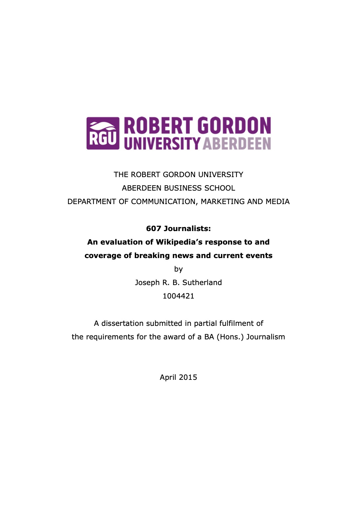
Abstract
Wikipedia is established as one of the Internet’s most accessed sources of information. Now one of the ten most popular websites in the world, since its launch in 2001 its content has been built up entirely by volunteers. The English-language version of the website, by far the largest, has covered a number of notable current events alongside more traditional encyclopaedic content.
This dissertation investigates how the English Wikipedia’s community of volunteers react and respond to breaking news, and how articles on current events are developed and built upon by contributors to the website. Using two peaks in the development of the article “Shooting of Michael Brown” in a cross- case analysis, this research investigates various aspects of the development of articles about breaking news. Specifically, the project explores the speed with which breaking news is responded to on Wikipedia, and its development over time; the accuracy and reliability of Wikipedia’s coverage of breaking news; and the range and characteristics of users updating breaking news content on Wikipedia.
The findings of this project concur with previous research into Wikipedia’s editorship, suggesting that a core group of editors contribute the vast majority of the article’s content — generally highly active and relatively young accounts. Whilst the speed of editing is high throughout article development, it is far from constant and largely unpredictable. The results also show that, as Wikipedia’s coverage of breaking news expands over time, the use of citations becomes more prominent respective to the prose, indicating a strong reliance on the corroboration of information from multiple sources.
Acknowledgements
I’d like to thank my supervisors, Andrew Jones and Dave Philips, for their invaluable recommendations and guidance throughout the dissertation process. Andrew especially I would like to thank for his assistance and time throughout all four of my years at the university. Thanks are also due to the many other lecturers who have motivated and inspired me throughout my time at RGU.
Special thanks to Os Keyes for their advice and assistance with learning the R programming language, which, while the outputs from this work did not make the final cut, was a great learning experience. Thank you to various Wikimedians who provided many an ear to questions about the movement — it’s been very helpful.
Last but not least, thanks especially to my friends and family who have put up with worries and questions throughout this process, and who have given me extremely helpful advice throughout.
Table of contents
List of figures
- Diagram of the scene in Ferguson shortly following the initial altercation (New York Times, 2014).
- Examples of templates used on Wikipedia to denote issues with articles: unreferenced, copy edit, disputed, current, and peacock.
- Ford’s sources work process for breaking news (Ford, 2012a).
- A simulated example of a reference using the cite web template, and its result.
- The Zipf curve identified by Almeida et al. (2007), plotted on a log-log graph.
- The number of contributors remaining active each month has consistently fallen since 2008 (Keyes, 2013).
- A Wikipedia reference annotated to show its composition.
- Edits per day (black) plotted against daily pageviews (red). Includes the original incident key and peak annotations.
- Editors’ first contributions to the article, plotted against account ages. Peaks 1 and 2 highlighted red and blue. Letters refer to the incident key in Figure 8.
- Editing rates per peak 1 sample, in edits per hour.
- Editing rates per peak 2 sample, in edits per hour.
- Content added to each peak per sample, expressed as a percentage of the final figure for each peak.
- Reference densities, in references per kilobyte, per sample. Left: peak 1. Right: peak 2.
- Source types used in each peak.
- Locations of sources across both peaks as a percentage of total citations.
- Average content added per edit over each experience category.
- Average edits (bars) and content created (line) added to the article per user, by year of account creation.
- Users’ edits to the article against their edit ranking, log-log, fit to the Zipf curve (dotted).
- Edits made by the top ten contributors, including all other editors combined.
- Content added by the top ten contributors by edit count, including all other editors combined.
1 Introduction
Wikipedia, one of the ten most accessed websites in the world (Whiting et al., 2014; Alexa, 2015), is arguably the largest collection of human knowledge ever created. Projects exist in hundreds of languages, with the English Wikipedia by far the largest of these, with almost five million articles contributed since its launch in January 2001 (Wikimedia, 2015). Although Wikipedia is known as an encyclopaedia, its growth and saturation have seen it branch into parallel remits, covering contemporary events and breaking news.
This dissertation investigates the development of articles focused on breaking news on the English Wikipedia by comparing two distinct areas of interest in the development of one such article. Using cross-case analysis and quantitive methods, the research seeks to investigate, in particular, the development speed and accuracy of such articles, as well as the range and variety of contributors to these articles.
The article selected for cross-case analysis is “Shooting of Michael Brown”, which documents the shooting in August 2014 of an unarmed black man by a white police officer in Ferguson, Missouri (Sanchez and Lawler, 2014). The article was the seventh most-edited article on the English Wikipedia in the whole of 2014, attracting around 5,500 edits from over 600 different editors (Barbara, 2014).
Article history data obtained in Wikipedia itself, in the form of “revisions”, were analysed to form a clear picture of the article’s development. These data were investigated for patterns, including the number of edits and unique editors over time, as well as the distribution of such edits. Various forms of quantitative analysis were undertaken to identify correlations between article views, editor numbers, and revision counts. Finally, the resulting findings were presented with recommendations as to how Wikipedia can improve its coverage of breaking news in the future.
1.1 Rationale
While academic studies into Wikipedia are common topics of conference papers and computer science journals, these tend to focus on user-content interaction and use complex quantitative methodologies in their data analysis. Only two studies have explicitly looked at Wikipedia’s growing prominence as a provider of breaking news information; one looked at a large range of articles about breaking news over twelve years (Keegan et al., 2013), while the second took an ethnographical approach to the article “Egyptian Revolution of 2011”, focusing on editorial aspects of Wikipedia editing (Ford, 2015).
Understanding Wikipedia’s role in the growing storefront of the news media is more important than ever, due to its size, scale, and inherent uniqueness (Singh et al., 2008). In theory, with many thousand active volunteers, Wikipedia is capable of providing high-speed developments to breaking news coverage online. By investigating the speed of the development of breaking news articles, as well as the use of sources to encourage and maintain the accuracy and reliability of information contained in these articles, this project gives an insight into news reportage using a collaborative authorship model.
Going forward, this should shed light on the people and the process involved in this development. These results may be used to contextualise Wikipedia within the growing range of digital news sources handling breaking news, and may also help position citizen journalism within the new media environment. The findings of this research may also be useful for Wikipedia internally, allowing more understanding of how editors engage with breaking news content and similar, high-tempo periods of article development.
1.2 Aim and objectives
The primary aim of this research project is to evaluate Wikipedia’s response to, and coverage of, breaking news and current events, using the article “Shooting of Michael Brown” as the frame for a cross-case analysis.
Objectives: 1. To analyse the speed with which breaking news is responded to on Wikipedia, and its development over time. 2. To evaluate the accuracy and reliability of Wikipedia’s coverage of breaking news. 3. To investigate the range and characteristics of users updating breaking news content on Wikipedia.
2 Literature review
2.1 Defining “breaking news”
The information era has heralded a new culture of journalism in which news is generally available to any given person at any given time. News is no longer found just in the traditional media of broadcast and print, but in various other forms across the public sphere, consumed increasingly through mobile devices. Hargreaves and Thomas (2002, cited in Hermida, 2010a) wrote that “news is, in a word, ambient, like the air we breathe”. As a direct consequence, there is a strong demand for media that is increasingly quick to respond to developments from anywhere in the world. Lewis and Cushion put it thus: “If immediacy has become the new life-blood of 24-hour news culture, breaking news is its apotheosis” (2009, p.304).
There is no exact definition of “breaking news”, rather, it varies from organisation to organisation (Lewis and Cushion, 2009, p.307). Lawrence refers not to “breaking news”, but to “event-driven news” — that is, news cued by dramatic events that are not managed by any overseeing body (Lawrence, 2000, p.9). She explains that political bodies, which traditionally set the agenda for the media through scheduled conferences and statements, tend to respond to, rather than dictate, events in these situations (ibid.).
Livingston and Bennett (2003, p.368) argue that “the public counterpart to the watchdog journalist is the engaged citizen”, meaning that rather than have journalists seek out breaking stories, the public is filling the role instead. The role of citizen journalism is becoming more prominent as the Internet becomes more and more dominant in mass communication. Lewis and Usher write that, to be relevant in such unpredictable markets, journalism must become collaborative and take more cue from open source culture and architecture (Lewis and Usher, 2013, p.608-9).
In particular, social media is now instrumental in the communication of unfolding events. Twitter, in particular, has been the subject of much academic interest, due in part to what Bruno (2011, p.5) refers to as the “Twitter Effect”. She states that Twitter, by aggregating potentially thousands of eyewitnesses from anywhere in the world, can provide live coverage with zero journalists at the scene (ibid.). This can be compared description to Hermida’s use of the term “awareness systems”, which he argues aid rather than totally replace the role of the journalist (Hermida, 2010b, p.298).
While user-generated content is increasingly rivalling the traditional media for the public’s attention, most academics agree that verification of information sourced through social media is important. The death of Osama bin Laden, for instance, was first revealed on the social networking website Twitter, and researchers found that a large number of Twitter’s users were satisfied that this information was accurate before news was officially confirmed (Hu et al., 2012). Despite this, news organisations now have complex procedures in place for the verification of online tip-offs such as these (Vis, 2013, p.28).
2.2 The shooting of Michael Brown
2.2.1 Altercation and shooting
Michael Brown, an 18-year-old black man from Ferguson, a small, working- class suburb of St. Louis, Missouri, was shot at around noon on Saturday, 9 August 2014 by Darren Wilson, a white police officer serving the city. His death sparked almost immediate protest from residents of the suburb, who over the course of that Saturday afternoon gathered to demonstrate against the police (Bernhard and Bissell, 2014). However, details of the incident were initially scarce; local police announced the following day that the shooting occurred following a struggle for Wilson’s weapon, though protesters noted that Brown was unarmed at the time of his death (Bosman and Fitzsimmons, 2014).
instance, which demonstrators at the scene argued amounted to “police terrorism” (Srikrishnan, 2014). Demonstrations soon became ugly; following a vigil for Brown, the protests became riots that soon spread through Ferguson, and violence lasted for over two weeks before calming (Williams, 2014).
Though the riots provided the case with media attention, the shooting itself raised questions about police brutality and race relations in the United States. The incident occurred less than a month after the death of Eric Gardner, another unarmed black man, at the hands of the police in New York City (Goldstein and Schweber, 2014). Writing in the Washington Post, Lowery et al. note that police forces in the United States are often disproportionately white, including the force serving the majority-black suburb of Ferguson (Lowery et al., 2014). Activist Patrisse Cullors told Vice that protests focused on racism in the police force had been ongoing long before the media picked up on Brown’s death: “Folks are very angry. We don't think the changes we need have been made. There has been no justice for Mike Brown, no justice for Eric Garner—people are still dying at the hands of the state. It's important for us to continue to push these conversations.” (Segalov, 2015)
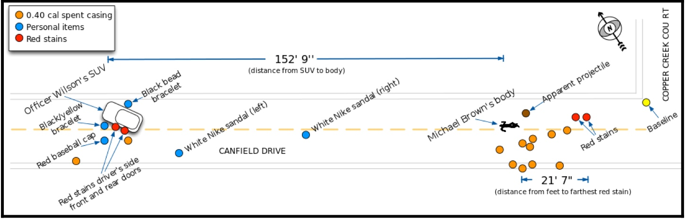
2.2.2 Darren Wilson indictment
The decision on whether or not to indict Wilson fell to a grand jury, as is customary in US criminal law proceedings. Journalist Ben Casselman wrote that these “nearly always” result in an indictment, noting that in 2010, just 11 of around 160,000 cases resulted in a refusal to indict (Casselman, 2014). Despite this, the grand jury in this case declined to indict Wilson in a decision announced on 24 November. The Guardian’s Jon Swaine wrote that this decision seemed unusual given the evidence obtained by the media, which suggested that Wilson was not correct to make use of deadly force under Missouri law (Swaine, 2014a). Conversely, Kindy and Horwitz reported in October that “more than a half-dozen unnamed black witnesses have provided testimony to a St. Louis County grand jury that largely supports Wilson’s account of events” (Clarke and Castillo, 2014; Kindy and Horwitz, 2014).
This decision was met with rioting and violent protest in Ferguson (Paunescu et al., 2014), anticipated by the governor of Missouri at least a week prior (Swaine, 2014b). The following day, largely peaceful protests took place across more than 170 US cities in 37 states (Almasy and Yan, 2014), demonstrating against police brutality in the United States. In the following weeks, Wilson resigned from the police force citing personal security concerns (Ellis et al., 2014), and US President Barack Obama announced the federal government would fund body cameras for officers in a bid to increase transparency among the police force (Lee et al., 2014).
2.3 Editing Wikipedia
The Wikipedia project, modelled as a free, online encyclopaedia, was created in January 2001 by Jimmy Wales with Larry Sanger and others (Zhang and Zhu, 2006). It is based on “wiki” software pioneered by Ward Cunningham in 1995 (Reagle, 2011, p.17), which allows mass collaboration through the real-time editing of pages on the website or “wiki”. This concept proved popular. Joseph Reagle writes that Wikipedia’s immediate predecessor, Nupedia — a similar proposition, but driven primarily by expert-only contributions — was essentially superseded by the new, mass collaboration project in 2003 (Reagle, 2009). The new project has boomed in popularity and is now one of the ten most accessed websites in the world (Whiting et al., 2014).
Because editors of Wikipedia — known as “Wikipedians” — work in real time, and revisions are instantly published to a large readership, their work is scrutinised and can be altered at will by virtually anyone (Kramer et al., 2008). Wikipedians are also required to irrevocably release any contributions under an open licence upon submission to Wikipedia (Broughton, 2008, p.220).
The benefits and downsides of such a setup have been debated by academics. Some argue that Wikipedia’s model of mass collaboration encourages a “plurality of perspectives” and, therefore, a more thorough and diverse representation of views and coverage (Crovitz and Smoot, 2009; Sepehri Rad and Barbosa, 2012). However, multiple critics maintain that, without proper editorial judgement, Wikipedia’s founding principles, those of openness of information are at risk of becoming mired in bureaucracy, polarising views, and vandalism (Kittur et al., 2008; Luyt et al., 2008; Auerbach, 2014). This balance has often been satirised by the English Wikipedia community: “The problem with Wikipedia is that it only works in practice. In theory, it can never work” (Ryökäs in Cohen, 2007).
2.3.1 The article process
Wikipedia built its following and allure around the concept of mass collaboration, and by doing so allowed its content to be edited by virtually anyone on the planet. Despite its size, Wikipedia encourages article development in theory, though has in place several policies which dictate the survival rates of newly created articles. Notability, for instance, is a big factor in an article’s initial lifecycle (Ayers et al., 2008, p.164). Generally, assuming guidelines can be met, articles can be created by any registered user.
To simplify the article process, Wikipedians developed “templates” that can be placed on articles to denote, for example, issues with that article (Holloway et al., 2007). Commonly these are used to denote whether or not an article is a “stub” and requires expansion (ibid.). Broughton writes these are useful for a number of reasons, such as to save time, to more easily categorise articles, or simply for consistency among articles (Broughton, 2008, p.19).
Often these templates are used during collaboration to indicate how an article can be improved. Research in 2011 found that these templates, referred to as “cleanup templates”, appear in around 8.5 percent of Wikipedia’s articles (Anderka et al., 2011). Of these, the most common tends to be the “unreferenced” template (Figure 2a), which indicates a total lack of citations (see also Chapter 2.3.4), which appeared in 4.6 percent of articles (ibid.). Breaking news articles are often tagged with the “current” template (Figure 2d), which alerts editors and readers alike to the fact that the article will be undertaking rapid development and as such may not be totally reliable (Ford, 2015, p.88).
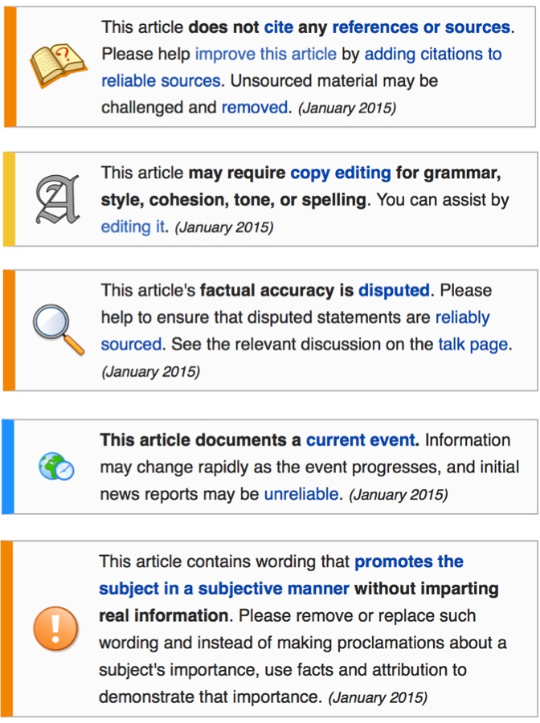
Templates can also be used inline, to denote phrases of text that are dubious or that require a source to verify the information contained within them (Anderka et al., 2012). Ford (2012b) writes that the “citation needed” template is a key aspect of Wikipedia’s reliance on verifiability: “Wikipedia focuses on this requirement as a way to keep Wikipedia content verifiable, enabling any user to check whether what is claimed on Wikipedia is accurate” (Ford, 2012b, p.16).
2.3.2 Notability and the deletion processes
In order to be kept on Wikipedia, an article must prove to be “notable” by Wikipedia’s standards, which have been developed over time by its community. The website’s “general notability guideline” (Wikipedia, 2015d) states: “If a topic has received significant coverage in reliable sources that are independent of the subject, it is presumed to be suitable for a stand-alone article or list.” There are other, more specific, notability guidelines for various other article areas, such as books, films, music releases, and events (Lam and Riedl, 2009). Wikipedia has a guideline for dealing with breaking news, discouraging editors from rushing to create articles on ongoing events: “early coverage may lack perspective and be subject to factual errors” (Wikipedia, 2015c).
Wikipedia’s notability criteria have been the subject of academic discussion, and there are those who believe the criteria prevents the encyclopaedia covering information representatively. It has been identified that the Internet as a whole covers more information from certain countries than others (Tankard and Royal, 2005), and as such this means that it is harder to prove the notability of topics from lesser-covered countries for inclusion on Wikipedia (Royal and Kapila, 2008). Others warn that this could result in “imbalances in coverage, representation and accuracy of information” (Flöck et al., 2011).
| Criterion | Applies to | Description |
|---|---|---|
| G1 | General | Patent nonsense |
| G2 | General | Test pages |
| G3 | General | Pure vandalism and blatant hoaxes |
| G4 | General | Recreation of a page that was deleted per a deletion discussion |
| G5 | General | Creations by banned or blocked users |
| G6 | General | Technical deletions |
| G7 | General | Author requests deletion |
| G8 | General | Pages dependent on a non-existent or deleted page |
| G9 | General | Office actions |
| G10 | General | Pages that disparage, threaten, intimidate or harass their subject or some other entity, and serve no other purpose |
| G11 | General | Unambiguous advertising or promotion |
| G12 | General | Unambiguous copyright infringement |
| G13 | General | Abandoned “Articles for creation” submissions |
| A1 | Articles-specific | No context |
| A2 | Articles-specific | Foreign language articles that exist on another Wikimedia project |
| A3 | Articles-specific | No content |
| A5 | Articles-specific | “Transwikied” articles |
| A7 | Articles-specific | No indication of importance (individuals, animals, organizations, web content, events) |
| A9 | Articles-specific | No indication of importance (musical recordings) |
| A10 | Articles-specific | Recently created article that duplicates an existing topic |
| A11 | Articles-specific | Obviously invented |
There are several systems in place on Wikipedia to delete newly-created articles. The most relevant in this instance is “speedy deletion”, in which an article is deleted if it is deemed to meet any of several criteria by an administrator (Ford and Geiger, 2012; Wikipedia, 2015a). These criteria, listed in Table 1, can be applied by any administrator at any time in the article’s lifecycle, though this is typically done within minutes of the article’s initial creation. Almost 60 percent of deleted articles on Wikipedia are deleted through this process (Geiger and Ford, 2011). By 2007, author Nicholas Carr labelled these criteria as an “increasingly arcane legal code” (Carr, 2011, p.199) due to their complexity and number. Of the criteria, by far the most commonly applied is “A7. No indication of importance”. Geiger and Ford found deletions under this rationale amounted to 37 percent of all “speedy deletions”, and 22 percent of all deletions using any process on the website (Geiger and Ford, 2011).
Lam and Riedl, using simple keyword analysis, wrote that only around 12 percent of deletions come as a result of more heavyweight processes that require more input and time to be invested in them (Lam and Riedl, 2009). One of these is “proposed deletion”, whereby any editor can place a “tag” on an article requesting its deletion. After seven days without objection, the article can be routinely deleted by an administrator (ibid., p.112).
The most heavyweight process for deciding whether or not to delete an article is known as “Articles for Deletion”. This first involves the nomination of the article for deletion and, over the course of five to seven days, Wikipedians give their opinions as to whether the article should exist. This process is dominated by experienced Wikipedians. Geiger and Ford found that the overwhelming majority of these debates featured process veterans; 96 percent of participants in a debate, on average, had participated in a previous debate (Geiger and Ford, 2011).
2.3.3 Conflict in a fast-paced environment
In The Wikipedia Revolution, Andrew Lih states that Wikipedia, as a result of its avant-garde operating style, “encourages, nay, depends on, conflict” (Lih, 2009, p.122). Conflicts are increasingly common on Wikipedia, in particular among contentious articles; while not unique to controversial articles, they have been used by researchers as an indication of such (Sumi et al., 2011). These conflicts are known on Wikipedia as “edit wars”, where information is added or removed in alternate revisions (Viégas et al., 2004). Yasseri et al. write: “Conflicts and editorial wars, although restricted to a limited number of articles which can be efficiently located, consume considerable amounts of editorial resources.” (Yasseri et al., 2012, cited in Jemielniak, 2014a, p.82)
There exist numerous processes to counteract conflict in editing, but Wikipedia places emphasis on consensus-building when creating content. This has been the case, Roy Rosenzweig notes, since the inception of the project, and was initially a stop-gap for a lack of formal rules (2006, p.124). This mindset has been retained as the website has grown more policies and introduced more complicated roles (ibid.). However, this tendency has been criticised; The Times’ Oliver Kamm suggested that one contributor’s expertise can be overshadowed by the many in the search for consensus: “…like an interminable political meeting the end result will be dominated by the loudest and most persistent voices.” (Kamm, 2007)
Indeed, research has found that the positive impact of collaboration versus individual effort can only be partially supported. While Kane (2009) found strong correlations between article quality and levels of collaboration, Kittur and Kraut (2008) discovered that more editors only had more of a positive effect when work was coordinated so the majority of the burden was placed on a small fraction of them. This situation is not helped by the natural “ownership” Wikipedians feel for their work, and, as a result, an overall reluctance to change through collaboration or conflict (Jemielniak, 2014a, p.81-2).
Researcher Mark Graham argues that, were these articles not receiving the level of attention that conflict provides, they would perhaps be subject to more serious neutrality problems and unaddressed bias issues (Graham, 2011, p. 279). Likewise, Franco et al. suggest that conflict can lead to “positive benefits” such as coming to agreements and reinforcing community values (Franco et al., 1995, cited in Kittur et al., 2007b).
2.3.4 Maintaining accuracy
Most of the criticism of Wikipedia falls on the part of its lack of accuracy. Librarian Philip Bradley told The Guardian in 2005 that “the main problem is the lack of authority”, noting that while publishers are duty-bound to ensure the accuracy of their content, no such duty exists in the traditional sense on Wikipedia (Waldman, 2005). As such, hoaxes are not unheard of on Wikipedia (Seelye, 2005; Hu et al., 2007; Messner and South, 2011). The problem can, and has, spilled into the political spheres; The Washington Post reported in 2006 that computers in the US Congress were being used to insert false (Noguchi, 2006). In 2014, programmer Ed Summers developed a Twitter account, “@CongressEdits”, which tracks edits to Wikipedia by computers on the US Congress’s network (Gallagher, 2014).
To maintain the accuracy of content, Wikipedia strongly encourages the use of citations to verify information added to the website. Founder Jimmy Wales affirmed in 2006 that Wikipedia ought to demand sources for all its information: “I really want to encourage a much stronger culture which says: it is better to have no information, than to have information like this, with no sources.” (Wales, 2006, cited in Wikipedia, 2015e) While research has found that one in four Wikipedia articles do not cite any sources whatsoever (Anderka and Stein, 2012), on average an entry will use of 2.65 external web pages as citations (Lopes and Carriço, 2008). Larger, or more contentious, articles will make use of many more. News articles, in particular, are required to be verifiable and written in a historical tone, as “Wikipedia should not offer first-hand news reports on breaking stories” (Wikipedia, 2015f).
Ford (2012a) suggests a work process for the collection of sources in high- tempo working environments such as breaking news. She suggests that editors, using article “talk pages”, collect various articles for scrutiny by a larger group of onlooking editors, who can then select sources based on corroboration with a second independent source (Figure 3). These sources are then summarised within the context of the article and added along with an inline citation, and over time are replaced by updated information or higher-quality sources.
↓
↓
↓
↓
<ref>{{cite web |url=http://www.theguardian.com/world/2014/jul/20/three-pro-russia-rebel-leaders-suspects-over-downed-mh17
|title=Three pro-Russia rebel leaders at the centre of suspicions over downed MH17
|first=Alec |last=Luhn |work=[[The Guardian]]
|date=20 July 2014 |accessdate=8 September 2014}}</ref>1. Luhn, Alec (20 July 2014). “Three pro-Russia rebel leaders at the centre of suspicions over downed MH17”. The Guardian. Retrieved 8 September 2014.
However, the software used by Wikipedia does not currently lend itself well to producing citations in the correct way academically (Luther et al., 2009). Currently, references are added using “templates” — short pieces of code which are converted into readable sources by Wikipedia’s software (Lopes and Carriço, 2008; cf. Figure 4). This use of pseudocode can be daunting to new users attracted by the allure of editing such a fast-growing and relevant article.
2.4 The open-source mindset
One of Wikipedia’s defining characteristics is that the content found on the website is purely user-generated, and available to anyone in the world, at any time, for free. This defines it as an “open-source project”, varieties of which have existed since the development of operating system software in the 1960s (Lerner and Tirole, 2002). Since then, especially during the dot-com boom of the 1990s (Callahan and Garrison, 2003), intangible, digital products have become increasingly valuable and intellectual property is big business (Hesse, 2002). These developments have been criticised by a number of writers and developers, who believe the open-source model, of free sharing of information, is the better option. John Naughton describes the move towards knowledge-as- product as “the knowledge economy”, which he argues stifles the technology industries: “copyright has always been, effectively, at war with technology” (Naughton, 2012, p.243).
2.4.1 Motivations of contributors
Before studying the range and characteristics of users contributing to Wikipedia and indeed to its coverage of breaking news, it is important to consider why these users voluntarily contribute to the website in the first place. Much research has been undertaken into why users contribute to open-source projects, which generally entails great amounts of work for little or no extrinsic reward.
These contributors are motivated by a complex range of factors, not all of which are economic — Bitzer et al. (2004) put forward that these factors can include crafting solutions to particular problems, the want for belonging to a like-minded community, and the enjoyment that goes with mastering the craft (ibid., p.169). Others propose that releasing one’s work publicly can be a result of “anticipated reciprocity, reputation, sense of efficacy, [or] need”: “A person is motivated to contribute valuable information to the group in the expectation that one will receive useful help and information in return, that is, the motivation is an anticipated reciprocity.” (Kollock, 1999, cited in Graham, 2011, p.263-4)
These findings have been seconded with research into contributors to Wikimedia projects. Lai and Yang (2014) wrote that Wikipedia “has created an environment that facilitates communal codification of knowledge”: “Wikipedia achieves this objective by enhancing contributors’ sense of meaningfulness, self-determination, and sense of relatedness.” (Lai and Yang, 2014) Nov found longer-term editors tend to be intrinsically motivated by, for instance, personal enjoyment (Nov, 2007), while Yang and Lai (2010) likewise suggest that relatively limited interaction between editors on Wikipedia means internal factors are generally driving ones. These findings are not corroborated by other researchers, however, with some arguing that those with administrative rights on the website may be motivated by stature, fiscal reward, or even potential career development (Zhang and Zhu, 2006).
2.5 Editor archetypes
One of the primary objectives of this research project is to investigate the range and characteristics of contributors to breaking news content on Wikipedia. It is generally accepted that, as with all collaborative systems, Wikipedia is driven mostly by a core group of editors that contribute the majority of the content (Kittur et al., 2007a; Kriplean et al., 2008). Wilkinson’s research into various online collaborative systems consistently found this to be the case (2008). A major component of this research project is to identify and explore the range of editors contributing to open-source collaborative projects. Certainly with the case of Wikipedia, the majority of the rules and guidelines that dictate how content can and cannot be added or removed are written by a select few users. Konieczny (2010) suggests that rather than as a democracy, Wikipedia could be described as an “oligarchy”, with a “cabal” of users holding most of the power in the community (p.272).
To fully understand the spread and variety in Wikipedia’s editing community, it is necessary to measure and categorise them accordingly. Stein and Hess elected to categorise German users in terms of how many edits they had made to “excellent” pages, but stress this does not translate to the user’s reputation on the website (Stein and Hess, 2007). They found that audited “featured” articles tended to be written by more experienced editors. The late activist Aaron Swartz argued that, using different metrics, the opposite is true; most of the gross content on Wikipedia has been added by users with very few edits, or users who are anonymous (Swartz, 2006). Kittur et al. (2007a) suggest despite initial trends towards “elite”, experienced users, most of the workload has gradually been taken on by newcomers.
Some users hold positions of power on Wikipedia — such as administrators and those holding the “rollback” right, which allows the automatic reversion of multiple edits by the same user (Ebersbach et al., 2008, p.63). These users are required to demonstrate their competence and experience before being awarded these rights, so their numbers were looked at to give context to these categories.
Halfaker, Keyes and Taraborelli (2013) drew their attention to “lurkers”, that is, users who do not contribute much to the project but who exist in very large numbers. A study of the behaviour of “lurkers” found that there are a wide range of reasoning for not participating, including shyness and a want for privacy (Nonnecke and Preece, 2003, p.116), and Beenen et al. (2004) found that others need to be encouraged to participate. In particular, they found lurkers were more likely to participate in a collaborative system after being set specific, rather than non-specific, goals.
2.5.1 Ambulance chasing
Brian Keegan suggests that a core group of editors emerges quickly following the breaking of news, a phenomenon he calls “ambulance chasing” (Keegan, 2014). His research suggests this core group collects itself generally within hours following the onset of breaking news, and that they move between articles to collaborate response among newer editors (Keegan et al., 2013). This tendency manifests itself primarily in articles with a global, rather than primarily domestic interest; for instance, he found “ambulance chasing” to be more obvious among articles such as “Malaysia Airlines Flight 370”, and “negligible” on those such as “United States elections, 2014” (Keegan, 2014). He contrasts this trend with those seen in other articles, non-breaking and historical, which can take months or years to see the same level of centralisation (Keegan et al., 2013, p.617).
This centralisation can take place sometimes before the article begins to be written, taking the form of “tags” added to the article automatically as it is created. These alert “page patrollers” to the article’s creation, who decide initially whether or not the article is worthy of inclusion, and ultimately whether to add to it personally (Ford, 2015).
2.5.2 Zipf’s law
Zipf’s Law is a distribution in which, for a set of population data, each point’s frequency is inversely proportional to its position in a frequency ranking (Anderson, 2009, p.126). Linguist George Zipf found, when studying English word usage in 1949, that the second-most common word would appear half as often as the first, and so on. This principle, which produces a “power- law”, or y=1/x, curve, can be applied not only to linguistics, but to various other phenomena (ibid.). Economist Paul Krugman wrote: “…The usual complaint about economic theory is that our models are oversimplified — that they offer excessively neat views of complex, messy reality. [In the case of Zipf’s Law] the reverse is true: we have complex, messy models, yet reality is startlingly neat and simple.” (Krugman, 1996)
Research has found that groups of contributors on Wikipedia tend to follow Zipf’s Law. Almeida et al. found that overall, contributions to Wikipedia followed not one but two Zipf curves (Figure 5). This indicated that two groups of users exist; a small number of contributors who make large-scale contributions to Wikipedia, and a much larger group who contribute far less content (Almeida et al., 2007).
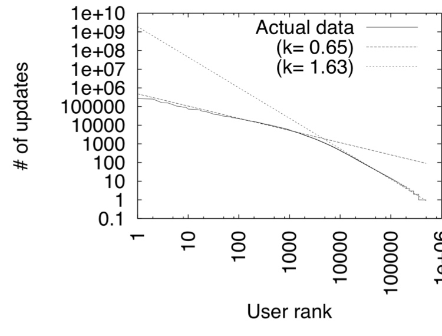
2.6 Wikipedia in decline
Studies undertaken during the rapid growth and rise to prominence of Wikipedia suggested the website was experiencing exponential growth (Voss, 2005; Capocci et al., 2006). This was found to be the case in terms of article numbers, page size, and editor retention figures. However, the growth of Wikipedia reached its peak in 2007, according to research by Suh et al. (2009). They argue that Wikipedia’s growth, as time goes on, will slow as article numbers tend toward an upper limit.
Article creation figures notwithstanding, editor retention is a larger issue for Wikipedia. Contrasting with research by Wilkinson (2008), Halfaker et al. state that “the success of an open collaboration project appears to be highly correlated with the number of participants it maintains” (Halfaker et al., 2013a, p.664). Therefore, it would appear that despite Wikipedia’s reliance on a core group of users, it has a vested interest in maintaining editor numbers to prolong the project’s success.
Technology Review journalist Tom Simonite suggested in 2013 that Wikipedia was inadvertently turning away editors through complicated editing interfaces and an increasingly complex system of rules and guidelines (Simonite, 2013):
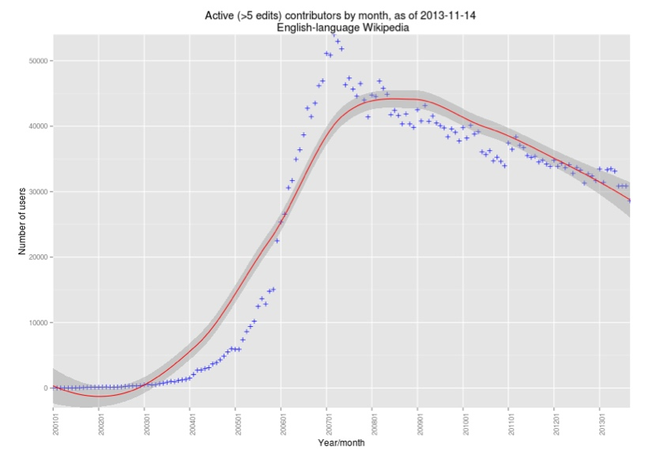
“The loose collective running the website today, estimated to be 90 percent male, operates a crushing bureaucracy with an often abrasive atmosphere that deters newcomers who might increase participation in Wikipedia and broaden its coverage.” (ibid., p.52) Indeed, Simonite’s criticisms were seconded by Jemielniak (2014b), who noted that Wikipedia contains thousands of policies and guidelines, of various levels of strictness. He also notes, however, that Wikipedia, in theory, relies on a policy of “common sense”, though says even this falls victim to the bureaucracy of the website.
Jemielniak explains that “bureaucracy substitutes for the lack of more traditional organizational hierarchy” (2014b), a concept investigated in research by Butler, Joyce and Pike (2008). They found that policies and guidelines had become extremely bloated since they were first established, sometimes being expanded by hundreds of times, indicating a more complicated rule system. However, they suggest that “pursuing the ‘policyless’ ideal that wikis represent is a pipedream; policy creation and maintenance is an important aspect of the work that must be done to keep the community running” (Butler et al., 2008).
3 Methodology
The aim of this research project was to investigate the development of breaking news articles on Wikipedia, with particular focus on the speed of this development, the use of sources in these cases, and the range of contributors to these articles. To research these areas in the most methodical way, this project makes use of both statistical and content analysis in a concurrent manner, framing these quantitative methods of analysis in a cross-case study.
3.1 Case selection
Eisenhardt states that case studies involve looking at one example in detail, focusing on “understanding the dynamics present within single settings”. These generally combine various methodologies, quantitative and qualitative, and can be used to achieve various aims, for instance, to test or generate theory (Eisenhardt, 1989, p.534-5). Green warns that, due to the nature of case studies, they are often limited in scope: “Each study is necessarily short, and to some degree partial, since these abbreviated vignettes are part of a larger consideration” (Green, 2010, p.14). Instead, cross-case analysis should maintain focus on individual cases, say Ayres et al., who state that “across- case synthesis achieves authenticity from the investigator’s analytic immersion within individual cases” (Ayres et al. 2003, p.875).
Cross-case analyses can take a number of forms, involving direct comparisons between two cases, trend studies over time and combinations thereof (Bouma, 1993, p.111, cited in Balnaves and Caputi, 2001, p.26). Yin states that an initial case study can be useful when encountering a second case with similar characteristics (Yin, 1981, p.63). By focusing on two regions of the development of a Wikipedia article, deeper analysis can be undertaken using one of these suggested models.
For this project, research focused on two “spikes” in the development of “Shooting of Michael Brown” — first, the creation of the article, as well as the initial flurry of editing, and second, the spike that occurred upon the non- indictment of Darren Wilson in November. These spikes were identified and defined through the analysis of editing activity and pageview data obtained from stats.grok.se (Mituzas, 2011), as well as with media coverage and timelines covering both events (cf. Paunescu et al., 2014; Swaine et al., 2014; Sanchez and Lawler, 2014).
These peaks, which are used to achieve both the speed and accuracy objectives, are defined as two sets of 500 revisions: The first, between 09:38 UTC on 16 August 2014 and 17:54 UTC on 18 August 2014 (a period of 2 days, 8 hours and 16 minutes), and the second, between 00:57 UTC on 23 November 2014 and 22:36 UTC on 01 December 2014 (a period of 8 days, 21 hours and 39 minutes).
3.2 Speed of development
Much of this research project made use of statistical analysis, a quantitative research method used to form conclusions or identify patterns in seemingly random samples (Belli, 2008, p.75). Data is collected and connections, from which hypotheses may be created, can be identified deductively. This is ideal for the objectives of this dissertation, as it will allow the exploration of speed, accuracy and range of contributors in an objective way, as well as the crafting of theories based on these explorations.
Wikipedia, in part due to its openness, allows anyone full access to its data through “revision histories”, which are available for every page on the website (Broughton, 2008, p.50). These revision data, or “editor–article interaction” data (Keegan et al., 2013, p.600), were extracted from the English Wikipedia’s Application Programming Interface (API). An API is a method of presenting information in a way that is easier for computers to understand (Jacobson et al., 2011, p.4); in this instance, Wikipedia’s API can be used to collect large amounts of metadata about articles hosted on the website. Using this method of data collection, the metadata for 6,072 revisions of the “Shooting of Michael Brown” article was extracted.
3.2.1 Sampling
Due to the scale of the “Shooting of Michael Brown” article, it was necessary to narrow the analysis to a select set of samples which define the relevant “spikes” as described in Chapter 3.1. These samples could then be analysed in depth to gain a deeper understanding of the article as a whole (Kranzler, 2007, p.125). Sample size is an important variable that must be taken into consideration; for this study, 500 revisions from each peak were selected to contain analysis appropriately and to keep the research from becoming unwieldy (Rowntree, 1981, p.25).
To measure the speed of this article’s development during the two peaks of development (as stated in Chapter 3.1), samples were taken systematically from the 500-revision peaks. Every tenth revision was selected, to provide for objective conclusions to be reached from this data, and for a methodical analysis to be completed within the timescale allowed. This resulted in 50 “slices” of article development each ten revisions large. For each “slice”, the timestamp and page size were analysed to give a representation of both the editing speed and scale of development. This technique is known as “inter-edit time” calculation, used by researchers primarily to investigate editing sessions (Halfaker et al., 2015). Editing speed itself was calculated in “edits per hour”, which involved finding the time difference over the “slice” and working out the editing speed, hypothetically, over an hour.
3.2.2 Statistical significance
This research made use of the Pearson correlation, the most common method for identifying correlations within data (Rumsey, 2007, p.308). This method is used for numerical data, such as those which do not consist of categorical or ordinal data (ibid.). This method will indicate whether a relationship exists between sets of data, the strength of this relationship, and the statistical significance of this relationship — that is, whether the relationship has emerged by chance or whether it allows meaningful conclusions to be reached (Weinberg and Abramowitz, 2002). Pearson correlation merely indicates relationships rather than providing a causation for them, which must be taken into account when undertaking analysis (ibid., p.136).
3.3 Accuracy and reliability
To analyse the references used to verify the information on Wikipedia, a different type of method was used. It is difficult, if not impossible, to perform analysis of accuracy, a subjective criterion, using quantitative means, and as such it was deemed necessary to analyse these references in a broader context. Specific revisions of the Wikipedia article were chosen systematically over each of two “peaks” of development (as stated in Chapter 3.1), and metadata on the references themselves was collected from each of these revisions (cf. Figure 7). This was done using Import.io, software that simplifies the creation of custom APIs for developers by automatically extracting information from web pages (Kumparak, 2013). Essentially, this converted information on the website into usable data which could be analysed and compared.
Content analysis is a research method closely related to statistical analysis. Krippendorff writes that the former is useful for drawing conclusions from texts in context (2004, p.18). He cites Berelson’s definition of the method in this regard, who put that content analysis is “a research technique for the objective, systematic and quantitative description of the manifest content of communication” (Berelson, 1952, cited in ibid., p.19). For this study, the data contained within references used in the “Shooting of Michael Brown” article were used as the content to be analysed.
Samples were selected systematically from each peak, ensuring no bias was introduced into the process (Kranzler, 2007, p.125-6). Systematic samples involve “selecting the sample at regular intervals from the sampling frame” (Saunders et al., 2009, p.226). This method of sampling allows for a diachronic picture of how the article’s references developed over the two peaks and for comparisons to be drawn from findings. These revisions are referred to throughout the study as “1A”, “1B” etc., and can be found in Appendix 8.1.1.
3.4 Editor analysis
There are a number of methods for categorising editors by experience. The Wikipedia community tends to refer to a number of these during, for example, the administrator election process (“Requests for Adminship”), a period in which a user is heavily scrutinised. Observers note that while the sheer volume of a user’s edits would appear an intuitive method for judging editing experience, the community “frown upon” artificially high edit counts (Burke and Kraut, 2008). Indeed, Collier et al. (2008) found that most users would use “prospective criteria”, mostly subjective, to judge other users. They identify two “retrospective criteria” which can be measured quantitatively to evaluate a user’s experience: number of edits and length of experience.
For this project, these “retrospective criteria” were applied to the 439 registered users (listed in Appendix 8.2) and the 162 anonymous users who contributed to the “Shooting of Michael Brown” article. This more rigorous method, as opposed to the use of samples, was selected to output more meaningful results that may be more reliably reproduced. For each user, the date of account creation and total edit count (as of 12 January 2015) were logged. To calculate a user’s “experience”, which is a subjective criterion by definition, the user’s edit count was divided by the account’s age to give a workable figure. These figures were then sorted into broad arbitrary categories for the sake of analysis as in Table 2. Anonymous users, who do not have a certain “account age”, were given a separate category for the purposes of this study. “Bots”, automated accounts generally used to revert vandalism or make small technical edits en-masse (Cosley et al., 2007; Steiner, 2014), were excluded, as their high rates of editing could skew findings.
| Edits/day | Category |
|---|---|
| 40+ | Power users |
| 10–40 | Highly active users |
| 5–10 | Very active users |
| 1–5 | Active users |
| 0.1–1 | Casual users |
| 0.01–0.1 | Infrequent users |
| <0.01 | Very infrequent users |
| IPs | Anonymous users |
These broad categories were given qualitative labels based on certain parameters to tell them apart from one another for the purposes of this project, though kept closely tied to their definitions to prevent potential confusion. These ranged from “power users”, a computing term used to denote highly experienced and active users, to “very infrequent users” who generally possess old but underused accounts. These descriptive labels were applied with caution to prevent the illusion of activity levels directly translating to experience and skill, which is not always the case (Kruger and Dunning, 1999).
3.5 Ethical considerations
The researcher is a long-time member of the Wikipedia community, having created an account in July 2006 and attaining “administrator”, or “sysop” (short for “systems operator” (Elia, 2006)), status in May 2008. Adler and Adler (1987, cited in Konieczny, 2010, p.264-5) define this role as a “member-researcher”, which is an approach not uncommon when undertaking research into Wikipedia’s inner workings. This is usually an option in qualitative research since information gathered through these methodologies generally passes through a researcher before being presented. The member-researcher role will not play a significant part in this particular research project, though its existence must be acknowledged since it opens opportunities for bias to spoil findings and results (Kelley, 1999, p.24).
To counteract this potential bias, research will be undertaken from the outside looking in, using primarily quantitative methods. Thus, while the researcher will play a role in the analysis of the data, it will not be as a qualitative researcher, and work will be undertaken to prevent personal response introducing itself into the findings (ibid.). Only data that are publicly available to the researcher will be used and analysed in this project, meaning that no personal data on, for example, users of the website will be accessed.
4 Results
4.1 Identifying spikes and peaks
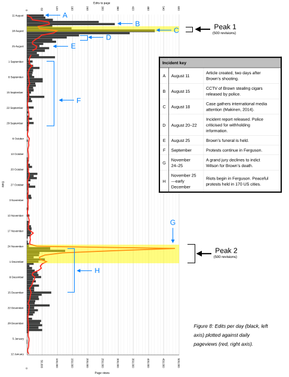
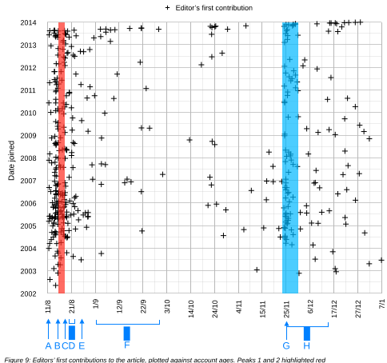
4.2 Speed of response
Peak 1 — initial Ferguson riots
Over the first peak (Figure 10), editing rates are far from constant. They vary from lows of 1.31 edits per hour to highs of 100 edits per hour at the start and end of the peak respectively. The mean rate throughout the 56.27 hour observed peak in editing activity was 18.57 edits per hour, with a standard deviation of 17.1. This was more than eleven times higher than the overall average edits per hour, which was 1.65.
Peak 2 — Wilson indictment decision
The second peak in editing activity, observed in late November (Figure 11), was slower but more consistent than the first. In this range, there was a low of 0.13 edits per hour — signifying a gap of over three days across the ten revision “slice” — and a high of 40 edits per hour in the middle of this peak. The mean was 7.21 edits per hour, two and a half times slower than observed in the first peak of development, with a standard deviation of 9.46. There is no significant correlation between these peaks that can be identified using Pearson correlation, indicating their unpredictable nature.
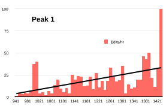
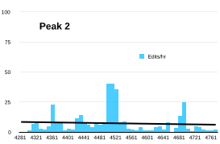
Text added
Across both peaks, a large amount of text was added to the article. In the first peak, this amounted to 30,905 bytes of data, meaning an average addition of 61.81 bytes per edit, and a mean of 501.02 bytes added per hour. The second peak, which lasted much longer chronologically, saw 39,179 bytes of text added over the observed period of editing, signifying a mean of 78.36 bytes added per edit, but only 138.77 bytes added per hour. This means that text addition was on average 3.6 times slower than in the first peak. A significant correlation between these rates of development can be identified using Pearson correlation, at the 0.01 level. This is visualised using percentages in Figure 12.
4.3 Analysis of sources
4.3.1 Usage of sources
For this analysis, the use of references was quantified over ten systematic samples taken from each peak, with the objective being to compare and contrast reference density across each time period. The first peak made use of a mean of 198.1 inline citations, a figure increasing to 339.1 in the second peak. The results of this analysis are visualised as a bar chart, with a linear trend line, in Figure 13.
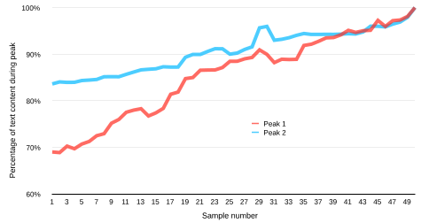
Comparing the two peaks, the first is almost one and a half times more reference-dense than the second over the ten samples. The mean density of each is 2.377 references per kilobyte and 1.613 references per kilobyte respectively. Both clearly show a similar increase in reference density over the 500-revision peak, with the first increasing by 5.3% and the second by 5.1%. This cross-case relationship is significant at the 0.05 level, two-tailed, using Pearson correlation, which indicates a strong level of correlation between the two peaks (Weinberg and Abramowitz, 2002, p.135-6).
4.3.2 Geography of sources
To further understand the use of sources in the “Shooting of Michael Brown” article, the 5,359 observed citations used across all twenty samples were sorted by type, location and publisher, and compared across the two peaks and the samples taken from each.
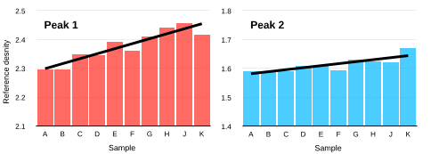
Source types
In both peaks, the most-used sources are overwhelmingly print sources or websites representing newspapers in the digital sphere. Of the citations observed across both peaks, 46.1 percent were in this category. The full results of this analysis can be seen in Figure 14.
There is a notable shift from website and radio sources to print media between the first and second peaks, with the website and radio source usage decreasing by 5.41 and 4.17 percentage points respectively. Print sources, however, saw an increase of 8.44 percentage points between the two peaks. The figures for television and magazine sources remained largely the same across both peaks.
Source geography
National newspapers, such as the New York Times — commonly referred to as a “newspaper of record” within the United States (Zelizer et al., 2002) — are well-represented in the references of the article. This is reflected in the percentage share of each peak taken up by sources from the state of New York, which is 26.8 percent in peak 1 and 27.75 percent in peak 2. The second-most populated category is that of Missouri itself, the state in which the shooting occurred. These sources include local print sources The St. Louis Post- Dispatch, The St. Louis American and the Springfield Leader, as well as radio and television sources from the surrounding area. These local sources represent one in five of all citations used in the article across both peaks. The vast majority of citations (76.17 and 82.83 percent) are from sources located within the United States while the others are foreign or global.
There are few drastic changes between the two peaks in terms of the geographic split, as can be observed in Figure 15. Missouri’s share of the citations, however, see an increase of 1.62 percentage points into peak 2, while online sources without an obvious origin, as well as foreign sources, see a marked decrease.
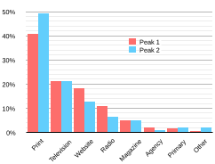
Publishers of sources
In the first peak, there were 72 unique publishers used at least once across the ten samples; in the second this figure increases to 87. Both peaks are dominated, however, by a select few of the most-used references. On average, the top ten references in peak 1 accounted for 55.9 percent of the total citations, and in peak 2 this figure rose to 61.3 percent, suggesting a move towards the centralisation of publishers between the two peaks. Both sets of twenty most-used publishers can be observed in Table 3.
These sources are primarily high-profile news sources which cover the whole of the United States, such as Georgia-based broadcaster CNN and national newspapers the Washington Post and the New York Times. The Missouri-based St. Louis Post-Dispatch makes an appearance in both peaks’ top fives, and in the second peak is by far the most-used publisher, with more than one in eight of all citations originating from the newspaper. It is not the only local source appearing in these lists: radio station KSDK is cited an average of 6.6 times across the first peak, though this drops to 3 in the second peak. Other local radio stations appear in these lists, such as KTVI (18th and 14th) and KMOV (13th and =29th).
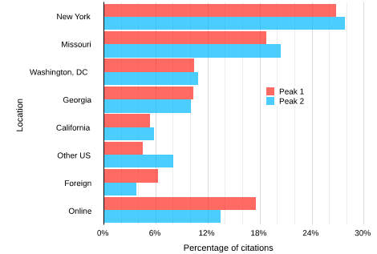
| Rank | Peak 1: publisher | Average uses | Per cent | Peak 2: publisher | Average uses | Per cent |
|---|---|---|---|---|---|---|
| 1 | CNN | 20.5 | 10.3% | St. Louis Post-Dispatch | 42.8 | 12.6% |
| 2 | Washington Post | 17.2 | 8.7% | CNN | 33.1 | 9.8% |
| 3 | New York Times | 12.8 | 6.5% | New York Times | 32.3 | 9.5% |
| 4 | Huffington Post | 12.1 | 6.1% | Washington Post | 31.5 | 9.3% |
| 5 | St. Louis Post-Dispatch | 10.6 | 5.4% | Los Angeles Times | 18.6 | 5.5% |
| 6 | Los Angeles Times | 8.8 | 4.4% | Huffington Post | 13.9 | 4.1% |
| 7 | MSNBC | 8.6 | 4.3% | USA Today | 11.4 | 3.4% |
| 8 | NBC News | 7 | 3.5% | NBC News | 9.2 | 2.7% |
| 9 | Vox | 6.7 | 3.4% | MSNBC | 7.9 | 2.3% |
| 10 | KSDK | 6.6 | 3.3% | CBS News | 7.2 | 2.1% |
| 11 | USA Today | 5.6 | 2.8% | TIME | 7 | 2.1% |
| 12 | TIME | 4.7 | 2.4% | Vox | 6.4 | 1.9% |
| 13 | KMOV | 4.5 | 2.3% | Fox News | 6.2 | 1.8% |
| 14 | Wall Street Journal | 4.5 | 2.3% | KTVI | 5.6 | 1.7% |
| 15 | New York Daily News | 4 | 2.0% | Newsweek | 4.3 | 1.3% |
| 16 | St. Louis American | 4 | 2.0% | Mail Online | 4.1 | 1.2% |
| 17 | Associated Press | 3.9 | 2.0% | New York Magazine | 4 | 1.2% |
| 18 | KTVI | 3 | 1.5% | ABC News | 3.9 | 1.2% |
| 19 | New York Magazine | 2.1 | 1.1% | New York Daily News | 3.2 | 0.9% |
| 20 | NPR | 2 | 1.0% | American Civil Liberties Union | 3 | 0.9% |
4.4 Range of contributors
The “Shooting of Michael Brown” article attracted 607 different contributors from creation on 11 August 2014 through to 12 January 2015, who between them contributed 6,072 edits over the 22-week period. Of these contributors, 439 were registered users, six were “bots” (automated editing tools for maintenance tasks (Geiger and Halfaker, 2013)), and the remaining 162 were logged-out users editing under an IP address.
4.4.1 Editor experience
| Edits/day | Category | Count | % Count | Of which status* | % Status |
|---|---|---|---|---|---|
| 40+ | Power users | 27 | 4.49% | 20 | 74.07% |
| 10–40 | Highly active users | 73 | 12.15% | 38 | 52.05% |
| 5–10 | Very active users | 67 | 11.15% | 26 | 38.81% |
| 1–5 | Active users | 105 | 17.47% | 19 | 18.10% |
| 0.1–1 | Casual users | 92 | 15.31% | 4 | 4.35% |
| 0.01–0.1 | Infrequent users | 62 | 10.32% | 0 | 0% |
| <0.01 | Very infrequent users | 13 | 2.16% | 0 | 0% |
| IPs | Anonymous users | 162 | 26.96% | 0 | 0% |
| Total/average | 601 | 100% | 107 | 17.80% |
* “Status” refers to users with “rollback” or administrative privileges (Arazy et al., 2015).
While these category boundaries were selected to result in a relative even spread across all seven categories, most of the registered users contributing to the article are classed as “active users”. Of these, around a fifth hold some level of status on Wikipedia, such as administrative rights or the “rollback” function which enables semi-automated reversion of content (Arazy et al., 2015). The category with the highest proportion of privileged users is “power users”, with almost three quarters holding status. This proportion becomes less substantial as users become less frequent. The same categories were then used to analyse the amount of content added to the article by users of each group (see Table 5).
| Category | Count | Total edits | Edits (mean) | Total added (bytes) | Added (mean) |
|---|---|---|---|---|---|
| Power users | 27 | 319 | 11.81 | 21,629 | 801.1 |
| Highly active users | 73 | 2,816 | 38.58 | 269,977 | 3698.3 |
| Very active users | 67 | 780 | 11.64 | 59,411 | 886.7 |
| Active users | 105 | 1,110 | 10.57 | 76,538 | 728.9 |
| Casual users | 92 | 562 | 6.11 | 53,848 | 585.3 |
| Infrequent users | 62 | 138 | 2.23 | 12,930 | 208.5 |
| Very infrequent users | 13 | 19 | 1.46 | 978 | 75.2 |
| Anonymous users | 162 | 253 | 1.56 | 6,263 | 38.7 |
| Total/average | 601 | 5,997 | 9.98 | 501,574 | 834.6 |
The vast majority of the content added to the “Shooting of Michael Brown” article over the 22-week period of observation — over half of the total — was contributed by the 73 users falling into the “highly active users” category, around an eighth of the total editor population. This suggests that experienced editors’ contributions are the driving force behind the production of content on this particular article. These editors made an average of 38.6 edits to the article and contributed an average of around 3.6 kilobytes of content each. Very infrequent users and IP addresses, conversely, contributed very little to the article on a per user basis.
Breaking this down further in terms of content added per edit (Figure 16), the divide between categories is not as pronounced. While those in the “highly active” category are still the top contributors using this metric, it is not nearly by the same margin. While these editors contributed an average of 95.87 bytes per edit, those in the “casual users” and “infrequent users” categories contributed a mean of 95.81 bytes and 93.70 bytes respectively. This can be seen to tail off, with “very infrequent users” contributing 51.47 bytes per edit and anonymous users adding less than half of that figure (24.75 bytes per
Account age
Leaving aside user edit counts, users were also charted by their account age — that is, the year in which their accounts were created. This is not necessarily the year in which their editing activity began. Looking at the number of edits and the data contributed to the article by year of account creation as visualised in Figure 17, the majority of both edits made to the article and data added to the article is the responsibility of those with accounts created in 2012 and 2013. A much lower proportion is contributed by, for instance, those with accounts created in 2010 and 2011. The correlation between the mean number of edits made to the article by each year group and the mean amount of content added is significant at the 0.01 level, two-tailed, using Pearson correlation, which suggests a very strong relationship between the two sets of data (Weinberg and Abramowitz, 2002, p.135-6).
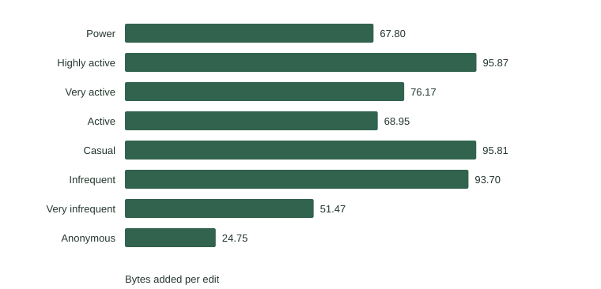
View chart data
| Contributor / group | Bytes added per edit |
|---|---|
| Power | 67.80 |
| Highly active | 95.87 |
| Very active | 76.17 |
| Active | 68.95 |
| Casual | 95.81 |
| Infrequent | 93.70 |
| Very infrequent | 51.47 |
| Anonymous | 24.75 |
4.4.2 Centralisation of edits
As discussed in Chapter 2.5.2, Zipf’s Law dictates that, in a frequency table, the top ranking user will have roughly twice as many edits as the second-most prolific editor, and so on, which should roughly fit to a straight line when plotted on a graph with two log axes. Data was taken from each user’s editing figures and plotted on a log-log graph in Figure 18. The relative straightness of the line’s fit against the expected Zipf curve shows that Zipf’s Law is adhered to by the data. The graph is stepped due to the high volume of users contributing very small numbers of edits: 362 contributors, over three-fifths of the total, contributed only one edit to the article.
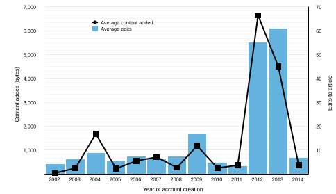
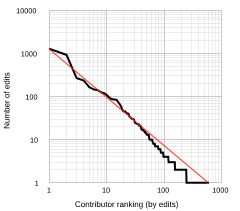
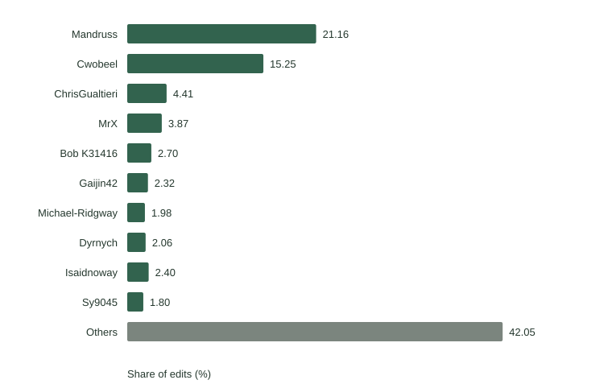
View chart data
| Contributor / group | Share of edits (%) |
|---|---|
| Mandruss | 21.16 |
| Cwobeel | 15.25 |
| ChrisGualtieri | 4.41 |
| MrX | 3.87 |
| Bob K31416 | 2.70 |
| Gaijin42 | 2.32 |
| Michael-Ridgway | 1.98 |
| Dyrnych | 2.06 |
| Isaidnoway | 2.40 |
| Sy9045 | 1.80 |
| Others | 42.05 |
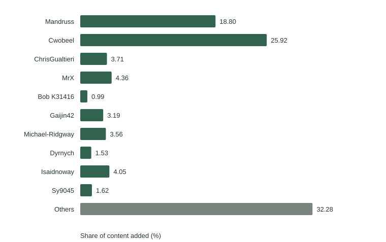
View chart data
| Contributor / group | Share of content added (%) |
|---|---|
| Mandruss | 18.80 |
| Cwobeel | 25.92 |
| ChrisGualtieri | 3.71 |
| MrX | 4.36 |
| Bob K31416 | 0.99 |
| Gaijin42 | 3.19 |
| Michael-Ridgway | 3.56 |
| Dyrnych | 1.53 |
| Isaidnoway | 4.05 |
| Sy9045 | 1.62 |
| Others | 32.28 |
Figure 19 shows that the top ten contributors by number of edits made to the article — fewer than two percent of the total number of editors — account for 58 percent of the total edits made to the article. The top editor, “Mandruss”, alone made over a fifth of the edits to the article over the observed 22-week period, with 1,285 edits. In terms of content added to the article (Figure 20), a more pronounced version of the same trend can be observed. Using this metric, the top ten contributors by edits to the article contributed more than two-thirds of the raw content; of the 503.7 kilobytes of content added to the article over the 22-week observed period, they contributed 341.1 kilobytes between them. “Cwobeel”, the second-highest user by edits to the article, contributed over a quarter of its raw content at 130.5 kilobytes.
5 Analysis and discussion
5.1 Speed of development
Perhaps counter-intuitively, this article did not exist until more than two days after the shooting occurred. While Michael Brown was shot at midday on the 9 August, the article did not come into being until the morning of 11 August Central Daylight Time. This suggests that editors held back on creating the article immediately, perhaps fearing Wikipedia’s notability guidelines, and lends weight to theories that Wikipedia’s bureaucratic rules are impeding the creation of new articles (Carr, 2011). Indeed, that the article was created so late is something of an anomaly for “breaking news”; the work of Keegan et al. reveals that some two-thirds of such articles are created within the first twenty-four hours of an event occurring (Keegan et al., 2013).
The speed of editing across the two areas of significant development, referred to throughout the project as “peaks” (Figure 8), proved to be less than constant though both peaks evidenced significantly quicker rates of editing than the figure for the entire article (Figures 10 and 11). It is difficult, however, to hypothesise a cause for such erratic rates of editing. Higher rates of editing may sometimes indicate controversies in articles, such as ‘back-and- forths’ between groups of editors adding and removing content (Kittur et al., 2007b; Vuong et al., 2008). This would suggest that the reversion of vandalism plays a role in the process. Research has suggested reversion of such material, at least in high-profile articles, occurs very quickly (Read, 2006). Smaller, more technical edits performed in sequence, rather than all at once, could also explain the disparities in editing rates.
The lack of statistical significance in this research’s findings should also be addressed. This suggests that it is not possible to accurately estimate the speed of article editing at any particular time and that it is, by and large, unpredictable in its ebbs and flows. However, comparing the two peaks overall, it is clear that the earlier peak, observed throughout the initial development of the article amid riots in Ferguson, attracted much quicker rates of editing. It also saw much more text being added, proportionately, in a smaller space of time. This, in combination with the high volume of newcomers taking part throughout this period (Figure 9), may indicate uncertainty among the community regarding how to piece together information in the early stages of production (Keegan et al., 2013). Instead, users may in these cases add content as it is covered by independent sources and leave the vetting process for quieter periods some days after the event itself (Ford, 2015, p.89).
The second peak, though surrounding a very high-profile and easily predicted event in the shooting’s storyline, saw a much more relaxed period of editing that saw 3.5 times less content added per hour than the first. This may be a result of there simply being less to say about this incident — the grand jury’s decision can be summed up in one well-cited sentence. A similar situation occurred in the article “2014 FIFA World Cup”, noted Keegan in 2014, who observed surprisingly small editing spikes during important games and a sudden, sharp decline in editing activity following the tournament’s conclusion (Keegan, 2014).
5.2 Accuracy and reliability
It is evident from the data collected that the quantitative use of citations within the text increases with time throughout each peak (Figure 13). This suggests one of two things: that users are adding more content to a number of different references attached to allow easier verification of facts, or it could be a result of the removal of poorly-sourced information from the article. Since the article’s size steadily increases over time, the former is the more likely cause of this trend.
This cannot define exactly how accurate information in these samples was, since it is not certain that text in the article accurately reflects the content of these citations and there is no method for quantifying the quality of the sources being utilised within them. However, this does indicate that Wikipedians are inserting more references than text, which suggests that each article is being treated as an encyclopaedic work rather than as an item of news. Garfinkel noted in 2008 that verifiability is “one of Wikipedia's three core content policies” alongside “no original research” (Wikipedia, 2015b) and “neutral point of view” (Garfinkel, 2008). Therefore, content added to the encyclopaedia will, in theory, require plentiful citation. Kane, however, warns that “more extensively referenced articles may lead to perceptions that content is more authoritative without regard to content quality”, suggesting that even the most citation-heavy articles are liable to contain information that does not reflect the content of said references (Kane, 2011).
The findings of this project mirror those of Chen and Roth (2012), who found that overall, references are used more frequently in Wikipedia articles in “periods during which more substantial edits are made”. They propose that this is due to “substantiation of articles”, in that the addition of well-referenced content fosters more of the same in subsequent revisions. This tends to occur when content is added in large chunks, generally by more “serious” and long- term users.
Comparing the two peaks, however, indicated that the first contained relatively more references than the second. This indicates that the interval between these periods, which was not observed, saw proportionately more text being added than citations being used to verify facts. It is feasible that the information contained within sources used was slowly incorporated into the article as fact, becoming what Wikipedia considers “original research” (Caverly and Ward, 2008; Niederer and van Dijck, 2010).
This research also found that the majority of sources used over the observed peaks were consistently print sources (Figure 14). While there is no objective definition of what constitutes a “reliable” source, it is likely that editors will select sources with solid reputations above fringe blogs and primary sources. Researchers in the past have discovered that large, global media sources such as The New York Times and BBC News are the most-used across the whole of Wikipedia (Ford et al., 2013), a trend clearly visible in this research. Nevertheless, Ford et al. propose that the most persistent sources are generally those that might normally be seen as primary sources: “…Amongst some of Wikipedia’s most high-traffic pages, the conception of what is considered ‘reliable’ does not necessarily refer to traditional academic publications.” (ibid.)
Ford suggests that because “editors often choose citations that will be deemed more acceptable to other editors”, the process of selecting sources for verifying information on breaking news articles is done largely by a select group (Ford, 2012a). These sources need to be backed up by secondary, independent sources to corroborate the information they convey, much like the practices employed by high-profile news providers (Bruno, 2011). Therefore, it is logical that these sources would be preferred to cite potentially contentious information within an article of this status.
The findings predictably agreed with those that state Wikipedia’s sources are primarily located in the United States (Figure 15; Ford et al., 2013). Since this article is on a US-based topic this is to be expected. It was also observed that sources based in St. Louis, Missouri, played a major role in providing verifiability to the article, particularly in the second of the two observed peaks. One in eight of the citations used were traceable to the St. Louis Post-Dispatch alone, and around a fifth of the sources over both peaks could be traced to Missouri. This could be a result of local media covering events in more depth. Studies into local media coverage of issues in Hamilton, Canada, found this to be the perception among the public when compared to national coverage of the same (Wakefield and Elliott, 2003).
5.3 Editor analysis
As expected, based on previous research into this area, the majority of the total registered users contributing to this article are classified as “active” users. Almost two-thirds of the registered users editing this article had edited Wikipedia at a rate of more than one edit per day. This lends weight to previous findings suggesting that Wikipedia’s core editing population tend to become motivated to continue editing and, indeed, contribute more actively (Iba et al., 2010; Lai and Yang, 2014).
While the number of “active” users is in itself not surprising, more than half of the article’s content was contributed by the 73 users in the “highly active users” category. This echoes previous findings obtained during research into open-source development, whereby most work is done by a “core group” of contributors (Mockus et al., 2002, cited in Kittur and Kraut, 2008). Users in this “highly active” category added almost four times more content per user than the mean across all categories. This agrees with the research of Kittur and Kraut (2008), who suggest that “high-coordination tasks […] may best be done by a small group of core users”.
More than quarter of the total contributors to the article, however, were not registered users on Wikipedia and were instead editing anonymously. This is a practice frowned upon by some sections of the Wikipedia community (Bryant et al., 2005; Geiger and Ribes, 2010). This group of contributors added by far the least content per edit at a mean of 38.7 bytes and made on average 1.56 edits each. Some researchers write that user groups editing infrequently tend to provide higher-quality contributions (Anthony et al., 2009), though others maintain that anonymous users are responsible for higher rates of vandalism on the website (Priedhorsky et al., 2007). The results of this project suggest that the majority of anonymous contributors are either not retained or very small, as suggested by the relatively low “content added per edit” figure, which may indicate vandalism or biased contributions which are eventually removed.
A substantial proportion of users falling into the higher categories hold special “user rights” on Wikipedia (Table 4), such as community-awarded administrative privileges or tools which which to combat vandalism more swiftly, which suggests that users with higher rates of edits per day are more likely to be perceived as trustworthy and experienced by the community. This may help to explain their higher levels of impact on the article’s content, as their content “sticks” based on their reputation. As Burke and Kraut write: “Despite protestations in Wikipedia that admins are lowly janitors ‘mopping up,’ in many ways election to administrator is a promotion, distinguishing an elite core group from the larger mass of editors.” (Burke and Kraut, 2008)
Although the 27 users falling into the “power users” category added a reasonable amount of content to the article, these users contributed far less in measurable content per edit than those in the categories representing less active users. This suggests that these editors performed more small, technical edits to the article, for instance, applying templates, adding categories or formatting references. This reflects previous research into Wikipedia article development, whereby experienced editors do less of the writing in favour of maintaining the technical aspects of the article and resolving content disputes (Ford, 2015). This low figure could also suggest these editors are contributing using less visible methods, such as by removing vandalism using automated tools (Geiger and Ribes, 2010).
Despite the results showing clearly that very highly active users added the majority of the raw content to the article, when looking at edits made purely by account age in Figure 17, it is apparent that most contributors have fairly new accounts. By far the highest mean number of edits to the article was observed in accounts created in 2012 and 2013, a trend mirrored by the figures for raw content added. These figures reflect previous findings suggesting that newcomers have taken on much of the workload involved in crafting an article on Wikipedia (Kittur et al., 2007a).
The results also showed editors to this article followed the Zipf curve fairly well in terms of gross edits made to the article across the full 22-week period of observation. This indicates a high level of centralisation, suggesting a small number of users made most of the edits — reflected by a roughly straight line when visualised on a graph with two log axes as in Figure 18. This trend has identified by previous researchers (Almeida et al., 2007; Halfaker et al., 2012). The findings of this project suggest that an editor’s position on this edit frequency ranking is indeed somewhat predictable.
This centralisation is made more obvious looking at percentages of edits made and content added (Figures 19 and 20): fewer than two percent of the total editor population contributed more than two-thirds of the content. This matches research identifying a supposed “core group” of prolific contributors (Panciera et al., 2009; Keegan et al., 2013), and further suggests that this is a consistent phenomenon. Wikipedia may be open for all to edit, but it is only a small proportion of those who do contributing the vast majority of its content.
5.4 Limitations of research
This project was focused on only one article, which surrounded a controversial topic with multiple narrative threads. For this reason, the viability of data obtained is potentially at risk. The small scale of the project and the use of cross-case analysis within one article means that trends observed may be unique to this article and the circumstances surrounding it. For instance, it may be that the pool of contributors to this article is limited only to those willing to become involved with such a sensitive topic, which may have skewed the results of this research particularly with regards to editor range and distribution.
6 Conclusion
This research set out to evaluate Wikipedia’s response to breaking news by investigating three factors of this process: the speed of article development; the use of citations to maintain the accuracy and reliability of content; and the range and characteristics of the editors contributing to these articles. The findings of this project show that, by comparing and contrasting two particularly stand-out regions of the article “Shooting of Michael Brown”: while the speed of development is not constant, it is still remarkably fast in comparison to the mean across the article as a whole. The website is able to provide high-tempo updates on breaking news articles.
It was found that inline citations were used more frequently as more text is added to the article over these same peaks in activity, suggesting content being added to the article requires more independent sources to correlate information. These sources tended to be academic, and primarily traceable to traditional publishers of news media such as print and broadcast. Additionally, there is a heavy weighting given to sources based in Missouri, the location of the incident itself, which could indicate that these sources are seen to be providing more thorough and relevant coverage.
The vast majority of the content added to this article was contributed by users with high levels of overall experience on Wikipedia, matching previous research suggesting that a “core group” of users is responsible for the majority of the information added to mass-collaborative knowledge projects. The results also show that the distribution of edits among contributors to the article is predictable using Zipf’s Law, further proving that the majority of the edits to this article are made by a select few users.
The study shows that breaking news is developed primarily by a core group of users, which despite high-tempo periods of editing, is able to back up facts through the sourcing of multiple high-profile sources. While Wikipedia’s “no original research” rule prevents first-hand reporting, information is aggregated from multiple sources to effectively create a piece reflecting multiple viewpoints.
6.1 Further study
Future study could be undertaken using more qualitative methodologies to look into the more technical, hidden aspects of Wikipedia’s processes of dealing with breaking news, such as editor interaction on talk pages. This could be achieved using an ethnographic approach. Further research might also analyse how information contained in these articles reflects the sources when synthesised into Wikipedia. It may also be pertinent to investigate how vandalism might manifest itself in the process of developing breaking news articles on Wikipedia.
7 Bibliography
Citation notes for this web edition
This web edition corrects the Singh, Tan and Mookerjee bibliography year from 2011 to 2008 to match the in-text citation. In section 2.5, “Kittur et al. (2007)” is clarified as “Kittur et al. (2007a)”: the discussion of newcomers taking on more of the workload identifies Power of the Few vs. Wisdom of the Crowd, rather than the 2007b paper on conflict and coordination. Both citations now link to their bibliography entries. The original wording remains in the downloadable PDF. Context-dependent “ibid.” references remain plain text.
ADLER, P.A. and ADLER, P., 1987. Membership Roles in Field Research. London: SAGE.
ALEXA, 2015. Wikipedia.org Site Overview. San Francisco, CA: Amazon [Online]. Available at: http://www.alexa.com/siteinfo/wikipedia.org [Accessed 7 March 2015].
ALMASY, S. and YAN, H., 2014. Protesters Fill Streets across Country as Ferguson Protests Spread Coast to Coast. Atlanta, GA: CNN [Online]. Available at: http://www.cnn.com/2014/11/25/us/national-ferguson-protests/.
ALMEIDA, R.B., MOZAFARI, B. and CHO, J., 2007. "On the Evolution of Wikipedia". In: Proceedings of the 2007 International Conference on Weblogs and Social Media, 26-28 March 2007. Boulder, CO. Menlo Park, CA: AAAI.
ANDERKA, M. and STEIN, B., 2012. "A Breakdown of Quality Flaws in Wikipedia". In: Proceedings of the 2nd Joint WICOW/AIRWeb Workshop on Web Quality, 16 April 2012. Lyon, France. New York City, NY: ACM.
ANDERKA, M., STEIN, B. and BUSSE, M., 2012. "On the Evolution of Quality Flaws and the Effectiveness of Cleanup Tags in the English Wikipedia". In: Proceedings of the 2012 Wikipedia Academy, 29 June-1 July 2012. Berlin, Germany. Wikimedia Deutschland.
ANDERKA, M., STEIN, B. and LIPKA, N., 2011. "Towards Automatic Quality Assurance in Wikipedia". In: Proceedings of the 20th international conference companion on World wide web, 28 March–1 April 2011. Hyderabad, India. New York, NY: ACM, pp. 5-6.
ANDERSON, C., 2009. The Long Tail: Why the Future of Business Is Selling Less of More. London: Random House.
ANTHONY, D., SMITH, S.W. and WILLIAMSON, T., 2009. Reputation and Reliability in Collective Goods: The Case of the Online Encyclopedia Wikipedia. Rationality and Society, 21(3), pp.283-306.
ARAZY, O., ORTEGA, F., NOV, O., YEO, L. and BALILA, A., 2015. "Functional Roles and Career Paths in Wikipedia". In: Proceedings of the 2015 ACM conference on Computer supported cooperative work and social computing (CSCW), 2015. Vancouver, Canada. New York, NY: ACM.
AUERBACH, D., 2014. Encyclopedia Frown. New York, NY: Slate [Online]. Available at: http://www.slate.com/articles/technology/bitwise/2014/12/wikipedia_editing_disputes_the_crowdsourced_encyclopedia_has_become_a_rancorous.single.html [Accessed 16 December 2014].
AYERS, P., MATTHEWS, C. and YATES, B., 2008. How Wikipedia Works: And How You Can Be a Part of It. San Francisco, CA: No Starch Press.
AYRES, L., KAVANAUGH, K. and KNAFL, K.A., 2003. Within-Case and Across-Case Approaches to Qualitative Data Analysis. Qualitative Health Research, 13(6), pp. 871-83.
BARBARA, J., 2014. Top 10 Most Edited Pages on Wikipedia in 2014. San Francisco, CA: Wikimedia Blog. [Online]. Available from: https://blog.wikimedia.org/2014/12/30/top-10-most-edited-pages-in-2014/ [Accessed 11 February 2015].
BEENEN, G., LING, K., WANG, X., CHANG, K., FRANKOWSKI, D., RESNICK, D. and KRAUT, R.E., 2004. "Using Social Psychology to Motivate Contributions to Online Communities". In: Proceedings of the 2004 ACM Conference on Computer Supported Cooperative Work, 6-10 November 2004. Chicago, IL. New York, NY: ACM.
BELLI, G., 2008. Nonexperimental Quantitative Research. In: S.D. LAPAN and M.T. QUARTAROLI (eds.) Research Essentials: An Introduction to Designs and Practices. Hoboken, NJ: John Wiley & Sons, pp.59-77.
BERELSON, B., 1952. Content Analysis in Communication Research. New York, NY: Free Press.
BERNHARD, J. and BISSELL, G., 2014. Anger Follows Police Shooting in St. Louis Suburb. Tysons Corner, VA: USA Today [Online]. Available at: http://www.usatoday.com/story/news/nation/2014/08/09/anger-follows-police-shooting-in-st-louis-suburb/13844477/ [Accessed 10 February 2015].
BITZER, J.R., SCHRETTL, W. and SCHRÖDER, P.J.H., 2004. Intrinsic Motivation in Open Source Software Development. Journal of Comparative Economics, 35(1), pp.160-9.
BOSMAN, J. and FITZSIMMONS, E.G. 2014. Grief and Protests Follow Shooting of a Teenager. The New York Times, 11 August 2014.
BOUMA, G.D., 1993. The Research Process. Melbourne, Australia: Oxford University Press Australia and New Zealand.
BROUGHTON, J., 2008. Wikipedia: The Missing Manual. [e-book] Sebastopol, CA: O'Reilly Media.
BRUNO, N., 2011. Tweet First, Verify Later?: How Real-Time Information Is Changing the Coverage of Worldwide Crisis Events. Oxford: Reuters Institute for the Study of Journalism [Online]. Available at: http://reutersinstitute.politics.ox.ac.uk/fileadmin/documents/Publications/fellows__papers/2010-2011/tweet_first_verify_later.pdf [Accessed 7 January 2015].
BRYANT, S.L., FORTE, A. and BRUCKMAN, A., 2005. "Becoming Wikipedian: Transformation of Participation in a Collaborative Online Encyclopedia". In: Proceedings of the 2005 International Conference on Supporting Group Work, 6-9 November 2005. Sanibel Island, FL. New York, NY: ACM.
BURKE, M. and KRAUT, R.E., 2008. "Mopping Up: Modeling Wikipedia Promotion Decisions". In: Proceedings of the 2008 ACM conference on Computer supported cooperative work (CSCW), 8-12 November 2008. San Diego, CA. New York, NY: ACM.
BUTLER, B., JOYCE, E. and PIKE, J., 2008. "Don’t Look Now, but We’ve Created a Bureaucracy: The Nature and Roles of Policies and Rules in Wikipedia". In: Proceedings of the 2008 ACM CHI Conference on Human Factors in Computing Systems, 5-10 April 2008. Florence, Italy. New York, NY: ACM.
CALLAHAN, G. and GARRISON, R.W., 2003. Does Austrian Business Cycle Theory Help Explain the Dot-Com Boom and Bust? The Quarterly Journal of Austrian Economics, 6(2), pp.67-98.
CAPOCCI, A., SERVEDIO, V.D., COLAIORI, F., BURIOL, L.S., DONATO, D., LEONARDI, S. and CALDARELLI, G., 2006. Preferential Attachment in the Growth of Social Networks: The Internet Encyclopedia Wikipedia. Physical Review E, 74(3).
CARR, N., 2011. Questioning Wikipedia. In: G. LOVINK and N. TKACZ (eds.) Critical Point of View: A Wikipedia Reader. Amsterdam, the Netherlands: Institute of Network Cultures, pp.191-202.
CASSELMAN, B., 2014. It’s Incredibly Rare for a Grand Jury to Do What Ferguson’s Just Did. New York, NY: FiveThirtyEight [Online]. Available at: http://fivethirtyeight.com/datalab/ferguson-michael-brown-indictment-darren-wilson/ [Accessed 11 February 2015].
CAVERLY, D.C. and WARD, A., 2008. Techtalk: Wikis and Collaborative Knowledge Construction. Journal of Developmental Education, 32(2), pp.36-7.
CHEN, C.-C. and ROTH, C., 2012. "{{Citation Needed}}: The Dynamics of Referencing in Wikipedia". In: Proceedings of the 8th Annual International Symposium on Wikis and Open Collaboration, 27-29 August 2012. Linz, Austria. New York, NY: ACM.
CLARKE, R. and CASTILLO, M., 2014. Michael Brown Shooting: What Darren Wilson Told the Ferguson Grand Jury. Atlanta, GA: CNN [Online]. Available at: http://edition.cnn.com/2014/11/25/justice/ferguson-grand-jury-documents/ [Accessed 13 February 2015].
COHEN, N., 2007. The Latest on Virginia Tech, From Wikipedia. New York, NY: The New York Times [Online]. Available at: http://www.nytimes.com/2007/04/23/technology/23link.html [Accessed 3 April 2015].
COLLIER, B., BURKE, M., KITTUR, A. and KRAUT, R.E., 2008. "Retrospective Versus Prospective Evidence for Promotion: The Case of Wikipedia". In: Proceedings of the 2008 annual meeting of the Academy of Management, 8-13 August 2008. Anaheim, CA. Briarcliff Manor, NY: Academy of Management.
COSLEY, D., FRANKOWSKI, D., TERVEEN, L. and RIEDL, J., 2007. "SuggestBot: Using Intelligent Task Routing to Help People Find Work in Wikipedia". In: Proceedings of the 12th international conference on Intelligent user interfaces, 28-31 January 2007. Honolulu, HI. New York, NY: ACM, pp.32-41.
CROVITZ, D. and SMOOT, W.S., 2009. Wikipedia: Friend, Not Foe. English Journal, 98(3), pp.91-7.
EBERSBACH, A., GLASER, M., HEIGL, R. and WARTA, A., 2008. Wiki: Web Collaboration. 2nd ed. [e-book] Berlin, Germany: Springer Science & Business Media.
EISENHARDT, K.M., 1989. Building Theories from Case Study Research. The Academy of Management Review, 14(4), pp.532-50.
ELIA, A., 2006. "An Analysis of Wikipedia Digital Writing". In: Proceedings of the workshop on New Text: Wikis and blogs and other dynamic text sources, 4 April 2006. Trento, Italy. Stroudsburg, PA: Association for Computational Linguistics, pp.16-23.
ELLIS, R., TODD, B. and KARIMI, F., 2014. Citing Security Concerns, Darren Wilson Resigns from Ferguson Police Force. Atlanta, GA: CNN [Online]. Available at: http://edition.cnn.com/2014/11/29/us/ferguson-protests [Accessed 3 March 2015].
FLÖCK, F., VRANDEČIĆ, D. and SIMPERL, E., 2011. "Towards a Diversity-Minded Wikipedia". In: Proceedings of the 3rd International Web Science Conference, 14–17 June 2011. Koblenz, Germany. New York, NY: ACM.
FORD, H., 2012a. Beyond Reliability: An Ethnographic Study of Wikipedia Sources. Ethnography Matters [Online]. Available at: http://ethnographymatters.net/blog/2012/07/31/beyond-reliability-an-ethnographic-study-of-wikipedia-sources/ [Accessed 10 February 2015].
FORD, H., 2012b. Wikipedia Sources: Managing Sources in Rapidly Evolving Global News Articles on the English Wikipedia. [Preprint]. SSRN. Available at: http://ssrn.com/abstract=2127204 [Accessed 9 August 2012].
FORD, H., 2015. Infoboxes and Cleanup Tags: Artifacts of Wikipedia Newsmaking. Journalism, 16(1), pp.79-98.
FORD, H. and GEIGER, R.S., 2012. "'Writing up Rather Than Writing Down': Becoming Wikipedia Literate". In: Proceedings of the 8th Annual International Symposium on Wikis and Open Collaboration, 27-29 August 2012. Linz, Austria. New York, NY: ACM.
FORD, H., SEN, S., MUSICANT, D.R. and MILLER, N., 2013. "Getting to the Source: Where Does Wikipedia Get Its Information From?". In: Proceedings of the 9th International Symposium on Wikis and Open Collaboration, 5-7 August 2013. Hong Kong, China. New York, NY: ACM.
FRANCO, V., PIIRTO, R., HU, H.Y., LEWENSTEIN, B.V., UNDERWOOD, R. and VIDAL, N., 1995. Anatomy of a Flame: Conflict and Community Building on the Internet. Technology and Society Magazine, 14(2), pp.12-21.
GALLAGHER, S., 2014. @Congressedits Tweets Anonymous Wikipedia Edits from Capitol Hill. New York, NY: Ars Technica [Online]. Available at: http://arstechnica.com/information-technology/2014/07/congressedits-tweets-anonymous-wikipedia-edits-from-capitol-hill/ [Accessed 24 January 2015].
GARFINKEL, S., 2008. Wikipedia and the Meaning of Truth. Technology Review, 111(6), pp.84-6.
GEIGER, R.S. and HALFAKER, A., 2013. "When the Levee Breaks: Without Bots, What Happens to Wikipedia’s Quality Control Processes?". Proceedings of the 9th International Symposium on Wikis and Open Collaboration, 5-7 August 2013. Hong Kong, China. New York, NY: ACM.
GEIGER, R.S. and FORD, H., 2011. "Participation in Wikipedia’s Article Deletion Processes". In: Proceedings of the 7th International Symposium on Wikis and Open Collaboration, 3–5 October 2011. Mountain View, CA. New York, NY: ACM.
GEIGER, R.S. and RIBES, D., 2010. "The Work of Sustaining Order in Wikipedia: The Banning of a Vandal". In: Proceedings of the 2010 ACM conference on Computer Supported Cooperative Work (CSCW), 6–10 February 2010. Savannah, GA. New York, NY: ACM, pp.117–26.
GOLDSTEIN, J. and SCHWEBER, N. 2014. Man’s Death after Chokehold Raises Old Issue for the Police. The New York Times, 19 July 2014.
GRAHAM, M., 2011. Wiki Space: Palimpsests and the Politics of Exclusion. In: G. LOVINK and N. TKACZ (eds.) Critical Point of View: A Wikipedia Reader. Amsterdam, the Netherlands: Institute of Network Cultures, pp.269-82.
GREEN, L., 2010. The Internet: An Introduction to New Media. Oxford: Berg.
HALFAKER, A., GEIGER, R.S., MORGAN, J.T. and RIEDL, J., 2013a. The Rise and Decline of an Open Collaboration System: How Wikipedia’s Reaction to Popularity Is Causing Its Decline. American Behavioral Scientist, 57(5), pp.664-88.
HALFAKER, A., KEEGAN, B., FORTE, A., GEIGER, R.S., TARABORELLI, D., PINCHUK, M. and MASLI, M., 2012. "What Aren’t We Measuring?: Methods for Quantifying Wiki- Work". In: Proceedings of the 8th Annual International Symposium on Wikis and Open Collaboration, 27–29 August 2012. Linz, Austria. New York, NY: ACM, pp.42.
HALFAKER, A., KEYES, O., KLUVER, D., THEBAULT-SPIEKER, J., NGUYEN, T.T., SHORES, K., UDUWAGE, A. and WARNCKE-WANG, M., 2015. "User Session Identification Based on Strong Regularities in Inter-Activity Time". In: Proceedings of the 2015 International World Wide Web Conference, 18-22 May 2015. Florence, Italy. New York, NY: ACM.
HALFAKER, A., KEYES, O. and TARABORELLI, D., 2013b. "Making Peripheral Participation Legitimate: Reader Engagement Experiments in Wikipedia". In: Proceedings of the 16th ACM Conference on Computer Supported Cooperative Work and Social Computing, 23–27 February 2013. San Antonio, TX. New York, NY: ACM.
HERMIDA, A., 2010a. From TV to Twitter: How Ambient News Became Ambient Journalism. M/C Journal, 13(2).
HERMIDA, A., 2010b. Twittering the News: The Emergence of Ambient Journalism. Journalism Practice, 4(3), pp.297-308.
HESSE, C., 2002. The Rise of Intellectual Property, 700 BC–AD 2000: An Idea in the Balance. Daedalus, 131(2), pp.26-45.
HOLLOWAY, T., BOŽIČEVIĆ, M. and BÖRNER, K., 2007. Analyzing and Visualizing the Semantic Coverage of Wikipedia and Its Authors. Complexity, 12(3), pp.30-40.
HU, M., LIM, E.-P., SUN, A., LAUW, H.W. and VUONG, B.-Q., 2007. "Measuring Article Quality in Wikipedia: Models and Evaluation". In: Proceedings of the 2007 ACM Conference on information and knowledge management, 6–8 November 2007. Lisbon, Portugal. New York, NY: ACM, pp.243–52.
HU, M., LIU, S., WEI, F., WU, Y., STASKO, J. and MA, K.-L., 2012. "Breaking News on Twitter". In: Proceedings of the 2012 SIGCHI Conference on Human Factors in Computing Systems, 5-10 May 2012. Austin, TX. New York, NY: ACM, pp.2751-4.
IBA, T., NEMOTO, K., PETERS, B. and GLOOR, P.A., 2010. Analyzing the Creative Editing Behavior of Wikipedia Editors. Procedia - Social and Behavioral Sciences, 2(4), pp.6441-56.
JACOBSON, D., BRAIL, G. and WOODS, D., 2011. APIs: A Strategy Guide. [e-book] Sebastopol, CA: O'Reilly Media.
JEMIELNIAK, D., 2014b. The Unbearable Bureaucracy of Wikipedia. New York, NY: Slate [Online]. Available at: http://www.slate.com/articles/technology/future_tense/2014/06/wikipedia_s_bureaucracy_problem_and_how_to_fix_it.html [Accessed 5 January 2015].
KAMM, O., 2007. Wisdom? More Like Dumbness of the Crowds. London: The Times [Online]. Available at: http://web.archive.org/web/20110814104256/http://www.timesonline.co.uk/tol/comment/columnists/guest_contributors/article2267665.ece [Accessed 21 January 2015].
KANE, G.C., 2009. It's a Network, Not an Encyclopedia: A Social Network Perspective on Wikipedia Collaboration. Academy of Management Proceedings, 2009(1), pp.1-6.
KANE, G.C., 2011. A Multimethod Study of Information Quality in Wiki Collaboration. ACM Transactions on Management Information Systems, 2(1), pp.1-16.
KEEGAN, B., 2014. The News on Wikipedia in 2014. Boston, MA: Brian C. Keegan. [Online]. Available from: http://www.brianckeegan.com/2014/12/the-news-on-wikipedia-in-2014/ [Accessed 29 December 2014].
KEEGAN, B., GERGLE, D. and CONTRACTOR, N., 2013. Hot Off the Wiki: Structures and Dynamics of Wikipedia’s Coverage of Breaking News Events. American Behavioral Scientist, 57(5), pp.595-622.
KELLEY, L.D., 1999. Measurement Made Accessible: A Research Approach Using Qualitative, Quantitative and Quality Improvement Methods. London: SAGE.
KEYES, O., 2013. File:Active Editors.png. San Francisco, CA: Wikimedia Commons [Online]. Available at: https://commons.wikimedia.org/wiki/File:Active_Editors.png [Accessed 8 January 2015].

KINDY, K. and HORWITZ, S., 2014. Evidence Supports Officer’s Account of Shooting in Ferguson. Washington, DC: The Washington Post [Online]. Available at: http://www.washingtonpost.com/politics/new-evidence-supports-officers-account-of-shooting-in-ferguson/2014/10/22/cf38c7b4-5964-11e4-bd61-346aee66ba29_story.html [Accessed 12 February 2015].
KITTUR, A., CHI, E.H., PENDLETON, B.A., SUH, B. and MYTKOWICZ, T., 2007a. Power of the Few vs. Wisdom of the Crowd: Wikipedia and the Rise of the Bourgeoisie. World wide web, 1(2), pp.19–27.
KITTUR, A. and KRAUT, R.E., 2008. "Harnessing the Wisdom of Crowds in Wikipedia: Quality through Coordination". In: Proceedings of the 2008 ACM conference on Computer supported cooperative work (CSCW), 8–12 November 2008. San Diego, CA. New York, NY: ACM, pp.37–46.
KITTUR, A., SUH, B. and CHI, E.H., 2008. "Can You Ever Trust a Wiki?: Impacting Perceived Trustworthiness in Wikipedia". In: Proceedings of the 2008 ACM conference on Computer supported cooperative work (CSCW), 8–12 November 2008. San Diego, CA. New York, NY: ACM, pp.477-80.
KOLLOCK, P., 1999. The Economies of Online Cooperation: Gifts and Public Goods in Cyberspace. In: P. KOLLOCK and M. SMITH (eds.) Communities in Cyberspace. London: Routledge, pp.220-42.
KONIECZNY, P., 2010. Adhocratic Governance in the Internet Age: A Case of Wikipedia. Journal of Information Technology & Politics, 7(4), pp.263-83.
KRAMER, M., GREGOROWICZ, A. and IYER, B., 2008. "Wiki Trust Metrics Based on Phrasal Analysis". In: Proceedings of the 4th International Symposium on Wikis, 8-10 September 2008. Porto, Portugal. New York, NY: ACM.
KRANZLER, J.H., 2007. Statistics for the Terrified. 4th ed. Upper Saddle River, NJ: Pearson Education.
KRIPLEAN, T., BESCHASTNIKH, I. and MCDONALD, D.W., 2008. "Articulations of WikiWork: Uncovering Valued Work in Wikipedia through Barnstars". In: Proceedings of the 2008 ACM conference on Computer supported cooperative work (CSCW), 8-12 November 2008. San Diego, CA. New York, NY: ACM, pp.47-56.
KRIPPENDORFF, K., 2004. Content Analysis: An Introduction to Its Methodology. Thousand Oaks, CA: SAGE.
KRUGER, J. and DUNNING, D., 1999. Unskilled and Unaware of It: How Difficulties in Recognizing One's Own Incompetence Lead to Inflated Self-Assessments. Journal of personality and social psychology, 77(6), pp.1121–34.
KRUGMAN, P., 1996. Confronting the Mystery of Urban Hierarchy. Journal of the Japanese and International economies, 10(4), pp.399-418.
KUMPARAK, G., 2013. Import.io Launches “Data Factory” to Simplify Converting Web Sites into an API. New York, NY: Techcrunch [Online]. Available at: http://techcrunch.com/2013/10/28/import-io-launches-data-factory-to-simplify-converting-web-sites-into-an-api/ [Accessed 18 January 2015].
LAI, C.-Y. and YANG, H.-L., 2014. The Reasons Why People Continue Editing Wikipedia Content – Task Value Confirmation Perspective. Behaviour & Information Technology, 33(12), pp.1371-82.
LAM, S.K. and RIEDL, J., 2009. "Is Wikipedia Growing a Longer Tail?". In: Proceedings of the ACM 2009 international conference on Supporting group work, 10-13 May 2009. Sanibel Island, FL. New York, NY: ACM, pp.105-14.
LAWRENCE, R.G., 2000. The Politics of Force: Media and the Construction of Police Brutality. Oakland, CA: University of California Press.
LEE, T., ROTH, Z. and TIMM, J.C., 2014. Obama to Announce $75 Million for Body Cameras. New York, NY: MSNBC [Online]. Available at: http://www.msnbc.com/msnbc/obama-announce-75-million-body-cameras [Accessed 3 March 2015].
LERNER, J. and TIROLE, J., 2002. Some Simple Economics of Open Source. The Journal of Industrial Economics, 50(2), pp.197-234.
LEWIS, J. and CUSHION, S., 2009. The Thirst to Be First. Journalism Practice, 3(3), pp.304-18.
LEWIS, S.C. and USHER, N., 2013. Open Source and Journalism: Toward New Frameworks for Imagining News Innovation. Media, Culture & Society, 35(5), pp. 602-19.
LIH, A., 2009. The Wikipedia Revolution: How a Bunch of Nobodies Created the World's Greatest Encyclopedia. London: Aurum Press.
LIVINGSTON, S. and BENNETT, W.L., 2003. Gatekeeping, Indexing, and Live-Event News: Is Technology Altering the Construction of News? Political Communication, 20(4), pp.363-80.
LOPES, R. and CARRIÇO, L., 2008. "On the Credibility of Wikipedia: An Accessibility Perspective". In: Proceedings of the 2nd ACM workshop on Information credibility on the web, 26-30 October 2008. Napa Valley, CA. New York, NY: ACM, pp.27-34.
LOWERY, W., LEONNIG, C.D. and BERMAN, M., 2014. Even before Michael Brown’s Slaying in Ferguson, Racial Questions Hung over Police. Washington, DC: The Washington Post [Online]. Available at: http://www.washingtonpost.com/politics/even-before-teen-michael-browns-slaying-in-mo-racial-questions-have-hung-over-police/2014/08/13/78b3c5c6-2307-11e4-86ca-6f03cbd15c1a_story.html [Accessed 10 Febraury 2015].
LUTHER, K., FLASCHEN, M., FORTE, A., JORDAN, C. and BRUCKMAN, A., 2009. "ProveIt: A New Tool for Supporting Citation in Mediawiki". In: Proceedings of the 5th International Symposium on Wikis and Open Collaboration, 25-27 October 2009. Orlando, FL. New York, NY: ACM.
LUYT, B., AARON, T.C.H., THIAN, L.H. and HONG, C.K., 2008. Improving Wikipedia's Accuracy: Is Edit Age a Solution? Journal of the American Society for Information Science and Technology, 59(2), pp.318-30.
MAKINEN, J., 2014. Michael Brown Shooting in Ferguson Becomes an International Incident. Los Angeles, CA: Los Angeles Times [Online]. Available at: http://www.latimes.com/world/asia/la-fg-ferguson-michael-brown-shooting-world-reaction-20140818-story.html [Accessed 23 March 2015].
MESSNER, M. and SOUTH, J., 2011. Legitimizing Wikipedia. Journalism Practice, 5(2), pp.145-60.
MITUZAS, D., 2011. Wikipedia Article Traffic Statistics. Stockholm, Sweden: stats.grok.se [Online]. Available at: http://stats.grok.se/ [Accessed 14 December 2014].
MOCKUS, A., FIELDING, R.T. and HERBSLEB, J.D., 2002. Two Case Studies of Open Source Software Development: Apache and Mozilla. ACM Transactions on Software Engineering and Methodology, 11(3), pp.309-46.
NAUGHTON, J., 2012. From Gutenberg to Zuckerberg: What You Really Need to Know About the Internet. London: Quercus.
NEW YORK TIMES, 2014. Documents Released in the Ferguson Case. New York, NY: The New York Times [Online]. Available at: http://www.nytimes.com/interactive/2014/11/25/us/evidence-released-in-michael-brown-case.html?_r=0 [Accessed 15 March 2015].
NIEDERER, S. and VAN DIJCK, J., 2010. Wisdom of the Crowd or Technicity of Content? Wikipedia as a Sociotechnical System. New Media & Society, 12(8), pp. 1368-87.
NOGUCHI, Y., 2006. On Capitol Hill, Playing Wikipolitics. Washington, DC: The Washington Post [Online]. Available at: http://www.washingtonpost.com/wp-dyn/content/article/2006/02/03/AR2006020302610.html [Accessed 8 January 2015].
NONNECKE, B. and PREECE, J., 2003. Silent Participants: Getting to Know Lurkers Better. In: C. LUEG and D. FISHER (eds.) From Usenet to CoWebs: Interacting with Social Information Spaces. Berlin, Germany: Springer, pp.110-32.
NOV, O., 2007. What Motivates Wikipedians? Communications of the ACM, 50(11), pp. 60-4.
PANCIERA, K., HALFAKER, A. and TERVEEN, L., 2009. "Wikipedians Are Born, Not Made: A Study of Power Editors on Wikipedia". In: Proceedings of the ACM 2009 international conference on Supporting group work, 10-13 May 2009. Sanibel Island, FL. New York, NY: ACM, pp.51-61.
PAUNESCU, D., MCCARTY, J. and STRANIERI, G., 2014. As It Happened: Ferguson Reacts to Grand Jury Decision. New York, NY: New York Post [Online]. Available at: http://nypost.com/2014/11/24/ferguson-reacts-to-michael-brown-grand-jury-decision/ [Accessed 26 December 2014].
PRIEDHORSKY, R., CHEN, J., LAM, S.K., PANCIERA, K., TERVEEN, L. and RIEDL, J., 2007. "Creating, Destroying, and Restoring Value in Wikipedia". In: Proceedings of the 2007 international ACM conference on Supporting group work, 4-7 November 2007. Sanibel Island, FL. New York, NY: ACM.
READ, B., 2006. Can Wikipedia Ever Make the Grade? Chronicle of Higher Education, 53(10), pp.A31.
REAGLE, J., 2009. Wikipedia: The Happy Accident. Interactions, 16(3), pp.42-5.
REAGLE, J.M., 2011. The Argument Engine. In: G. LOVINK and N. TKACZ (eds.) Critical Point of View: A Wikipedia Reader. Amsterdam, the Netherlands: Institute of Network Cultures, pp.14-33.
ROSENZWEIG, R., 2006. Can History Be Open Source?: Wikipedia and the Future of the Past. The Journal of American History, 93(1), pp.117-46.
ROWNTREE, D., 1981. Statistics without Tears: A Primer for Non-Mathematicians. Harmondsworth: Penguin.
ROYAL, C. and KAPILA, D., 2008. What's on Wikipedia, and What's Not . . . ?: Assessing Completeness of Information. Social Science Computer Review, 27(1), pp. 138-48.
RUMSEY, D.J., 2007. Intermediate Statistics for Dummies. Hoboken, NJ: John Wiley & Sons.
SANCHEZ, R. and LAWLER, D., 2014. Ferguson: Timeline of Events since Michael Brown's Death. London: The Telegraph [Online]. Available at: http://www.telegraph.co.uk/news/worldnews/northamerica/usa/11242108/Ferguson-timeline-of-events-since-Michael-Browns-death.html [Accessed 19 December 2014].
SAUNDERS, M., LEWIS, P. and THORNHILL, A., 2009. Research Methods for Business Students. 5th ed. [e-book] Harlow: Pearson Education.
SEELYE, K.Q. 2005. Snared in the Web of a Wikipedia Liar. New York, NY: The New York Times, 4 December 2005.
SEGALOV, M., 2015. We Spoke to the Activist Behind #Blacklivesmatter About Racism in Britain and America. New York, NY: Vice [Online]. Available at: http://www.vice.com/read/patrisse-cullors-interview-michael-segalov-188 [Accessed 10 February 2015].
SEPEHRI RAD, H. and BARBOSA, D., 2012. "Identifying Controversial Articles in Wikipedia: A Comparative Study". In: Proceedings of the 8th Annual International Symposium on Wikis and Open Collaboration, 27-29 August 2012. Linz, Austria. New York, NY: ACM.
SIMONITE, T., 2013. The Decline of Wikipedia. MIT Technology Review, 116(6), pp. 50-6.
SINGH, P.V., TAN, Y. and MOOKERJEE, V., 2008. Network Effects: The Influence of Structural Social Capital on Open Source Project Success. Management Information Systems Quarterly, 35(4), pp.A1-7.
SRIKRISHNAN, M., 2014. Looting, Vandalism Follow Vigil for Dead Missouri Teenager. Los Angeles, CA: Los Angeles Times [Online]. Available at: http://www.latimes.com/nation/nationnow/la-na-nn-missouri-police-shooting-20140810-story.html#page=1 [Accessed 10 February 2015].
STEIN, K. and HESS, C., 2007. "Does It Matter Who Contributes? – a Study on Featured Articles in the German Wikipedia". In: Proceedings of the 18th conference on Hypertext and hypermedia, 10-12 September 2007. Manchester. New York, NY: ACM.
STEINER, T., 2014. "Bots vs. Wikipedians, Anons vs. Logged-Ins (Redux): A Global Study of Edit Activity on Wikipedia and Wikidata". In: Proceedings of the 10th International Symposium on Open Collaboration, 27-29 August 2014. Berlin, Germany. New York, NY: ACM, pp.1-7.
SUH, B., CONVERTINO, G., CHI, E.H. and PIROLLI, P., 2009. "The Singularity Is Not Near: Slowing Growth of Wikipedia". In: Proceedings of the 4th International Symposium on Wikis and Open Collaboration, 25-27 October 2009. Orlando, FL. New York, NY: ACM.
SUMI, R., YASSERI, T., RUNG, A., KORNAI, A. and KERTESZ, J., 2011. "Edit Wars in Wikipedia". In: Proceedings of the 2011 IEEE International Conference on Privacy, Security, Risk and Trust and IEEE International Conference on Social Computing, 9-11 October 2011. Boston, MA. Washington, DC: IEEE.
SWAINE, J., 2014a. How Darren Wilson Avoided Criminal Charges for Killing Michael Brown. London: The Guardian [Online]. Available at: http://www.theguardian.com/us-news/2014/nov/24/how-darren-wilson-avoided-criminal-charges [Accessed 12 February 2015].
SWAINE, J., 2014b. Missouri Governor Declares State of Emergency as National Guard Called in to Ferguson. London: The Guardian [Online]. Available at: http://www.theguardian.com/us-news/2014/nov/17/missouri-governor-state-of-emergency-ferguson [Accessed 12 February 2015].
SWAINE, J., LEWIS, P. and ROBERTS, D., 2014. Grand Jury Decline to Charge Darren Wilson for Killing Michael Brown. London: The Guardian [Online]. Available at: http://www.theguardian.com/us-news/2014/nov/24/ferguson-police-darren-wilson-michael-brown-no-charges [Accessed 16 January 2015].
SWARTZ, A., 2006. Who Writes Wikipedia? New York, NY: Raw Thought. [Online]. Available from: http://www.aaronsw.com/weblog/whowriteswikipedia [Accessed 5 January 2015].
TANKARD, J.W. and ROYAL, C., 2005. What’s on the Web—and What’s Not. Social Science Computer Review, 23(3), pp.360-70.
VIÉGAS, F.B., WATTENBERG, M. and DAVE, K., 2004. "Studying Cooperation and Conflict between Authors with History Flow Visualizations". In: Proceedings of the CHI 2004 Conference on Human Factors in Computing Systems, 24-29 April 2004. Vienna, Austria. New York, NY: ACM.
VIS, F., 2013. Twitter as a Reporting Tool for Breaking News. Digital Journalism, 1(1), pp.27-47.
VOSS, J., 2005. "Measuring Wikipedia". In: Proceedings of the 10th International Conference of the International Society for Scientometrics and Informetrics, 24-28 July 2005. Stockholm, Sweden.
VUONG, B.-Q., LIM, E.-P., SUN, A., LE, M.-T., LAUW, H.W. and CHANG, K., 2008. "On Ranking Controversies in Wikipedia: Models and Evaluation". In: Proceedings of the international conference on Web search and web data mining, 11-12 February 2008. Palo Alto, CA. ACM, pp.171-82.
WAKEFIELD, S.E.L. and ELLIOTT, S.J., 2003. Constructing the News: The Role of Local Newspapers in Environmental Risk Communication. The Professional Geographer, 55(2), pp.216-26.
WALDMAN, S., 2005. Who Knows? London: The Guardian [Online]. Available at: http://www.theguardian.com/technology/2004/oct/26/g2.onlinesupplement [Accessed 8 January 2015].
WALES, J., 2006. Insist on Sources. San Francisco, CA: Wikimedia Mailman [Online]. Available at: https://lists.wikimedia.org/pipermail/wikien-l/2006-July/050773.html [Accessed 21 January 2015].
WEINBERG, S.L. and ABRAMOWITZ, S.K., 2002. Data Analysis for the Behavioral Sciences Using SPSS. [e-book] Cambridge: Cambridge University Press.
WHITING, S., JOSE, J.M. and ALONSO, O., 2014. "Wikipedia as a Time Machine". In: Proceedings of the 24th International World Wide Web Conference, 7-11 April 2014. Seoul, South Korea. New York, NY: ACM.
WIKIMEDIA, 2015. List of Wikipedias. San Francisco, CA: Wikimedia Foundation [Online]. Available at: https://meta.wikimedia.org/wiki/List_of_Wikipedias [Accessed 7 March 2015].
WIKIPEDIA, 2015a. Criteria for speedy deletion. San Francisco, CA: Wikimedia Foundation [Online]. Available at: https://en.wikipedia.org/w/index.php?title=Wikipedia:Criteria_for_speedy_deletion&oldid=640972307 [Accessed 8 January 2015].
WIKIPEDIA, 2015b. No original research. San Francisco, CA: Wikimedia Foundation [Online]. San Francisco, CA: Wikimedia Foundation. Available at: https://en.wikipedia.org/wiki/Wikipedia:No_original_research [Accessed 20 March 2015].
WIKIPEDIA, 2015c. Notability (events): Breaking news. San Francisco, CA: Wikimedia Foundation [Online]. San Francisco, CA: Wikimedia Foundation. Available at: https://en.wikipedia.org/wiki/Wikipedia:Notability_(events)#Breaking_news [Accessed 15 March 2015].
WIKIPEDIA, 2015d. Notability: General notability guideline. San Francisco, CA: Wikimedia Foundation [Online]. San Francisco, CA: Wikimedia Foundation. Available at: https://en.wikipedia.org/wiki/Wikipedia:Notability#General_notability_guideline [Accessed 15 March 2015].
WIKIPEDIA, 2015e. Verifiability. San Francisco, CA: Wikimedia Foundation [Online]. San Francisco, CA: Wikimedia Foundation. Available at: https://en.wikipedia.org/wiki/Wikipedia:Verifiability [Accessed 21 January 2015].
WIKIPEDIA, 2015f. What Wikipedia is not: Wikipedia is not a newspaper. San Francisco, CA: Wikimedia Foundation [Online]. Available at: https://en.wikipedia.org/wiki/Wikipedia:What_Wikipedia_is_not#Wikipedia_is_not_a_newspaper [Accessed 17 February 2015].
WILKINSON, D.M., 2008. "Strong Regularities in Online Peer Production". In: Proceedings of the 9th ACM conference on Electronic commerce, 8-12 July 2008. Chicago, IL. New York, NY: ACM.
WILLIAMS, A.J., 2014. Johnson: 'Peace Is Being Restored in Ferguson'. St. Louis, MO: KSDK [Online]. Available at: http://www.ksdk.com/story/news/local/2014/08/25/ferguson-no-arrests-sunday-peace-spreading/14552815/.
YANG, H.-L. and LAI, C.-Y., 2010. Motivations of Wikipedia Content Contributors. Computers in Human Behavior, 26(6), pp.1377-83.
YASSERI, T., SUMI, R., RUNG, A., KORNAI, A. and KERTÉSZ, J., 2012. Dynamics of Conflicts in Wikipedia. PLoS ONE, 7(6).
YIN, R.K., 1981. The Case Study Crisis: Some Answers. Administrative Science Quarterly, 26(1), pp.58-65.
ZELIZER, B., PARK, D. and GUDELUNAS, D., 2002. How Bias Shapes the News: Challenging the New York Times' Status as a Newspaper of Record on the Middle East. Journalism, 3(3), pp.283-307.
8 Appendices
8.1 Samples
To access each sample, the listed number should be appended to:
http://en.wikipedia.org/w/index.php?oldid=
8.1.1 Objective 1: speed
Peak 1
621488667, 621503069, 621525281, 621540387, 621555719, 621564814,
621566407, 621567611, 621579312, 621586754, 621607504, 621615561,
621632735, 621638157, 621641388, 621648981, 621664508, 621671996,
621690250, 621693002, 621696125, 621698517, 621701240, 621706282,
621710776, 621713884, 621719674, 621721377, 621725677, 621728573,
621735757, 621738679, 621740112, 621741849, 621744274, 621746969,
621748277, 621761377, 621765198, 621770763, 621776496, 621779689,
621782603, 621784028, 621785534, 621787116, 621790394, 621796572,
Peak 2
635062708, 635283027, 635327862, 635335583, 635342036, 635357156,
635378465, 635391408, 635394221, 635404080, 635412364, 635453028,
635473347, 635492362, 635496193, 635499019, 635504407, 635513392,
635527394, 635536909, 635548164, 635559348, 635561327, 635563303,
635565355, 635574697, 635582027, 635605420, 635626942, 635664845,
635678381, 635718049, 635752735, 635780423, 635796837, 635811940,
635840358, 635847393, 635941166, 635961891, 635966794, 635969762,
635990851, 636032704, 636046983, 636064955, 636096424, 636133965,
8.1.2 Objective 2: accuracy
Peak 1
A: 621466948
B: 621565017
C: 621611776
D: 621666395
E: 621699925
F: 621721601
G: 621740724
H: 621765386
J: 621784693
K: 621800244
Peak 2
A: 635327391
B: 635392243
C: 635486001
D: 635528442
E: 635564701
F: 635666984
G: 635810490
H: 635967389
J: 636070933
K: 636270163
8.2 Registered users
Usernames link to their Wikipedia user pages. The symbols below preserve the role markings in the original dissertation.
† Administrator · ‡ User with rollback · § Subsequently blocked user. Markings reflect the original dissertation.
- 220 of Borg‡
- 331dot
- 4154aiden
- 9kat
- A Quest For Knowledge‡
- A wild Rattata
- Aa88x
- Aarp65
- ACanadianToker
- Accurrent
- AdventurousSquirrel
- Aggreen3
- Akld guy
- All Hallow's Wraith‡
- Americasroof
- Amortias‡
- AndrewK760
- Andrewman327‡
- Andyvphil
- Annoynmous
- Anomalocaris
- Another Believer‡
- Anthony Fok
- Apokrif
- Apples grow on pines
- Aprock
- APS221
- Archon 2488
- Ardric47
- Arilakon
- Arilynmil91
- Arms & Hearts
- Arzel
- Ashwinr
- Atotalstranger
- Auric
- Avanu‡
- B2project
- Backendgaming
- Bakheer
- Bander.Quraishi
- Barnabypage
- Baseball Watcher‡
- Bbliss
- Bdell555
- Bearian‡
- Bellerophon5685
- Benefac
- Bilby†
- Bluemousered
- BlueSalix
- Bmearns
- Bob K31416
- Bobnorwal
- Bongey
- Borderings
- BoxingBlake
- Braneof
- Breakingaway
- Brianhe‡
- BZTMPS‡
- C.J. Griffin
- Caladonia
- Calatayudboy
- Callanecc†
- CambridgeBayWeather†
- Cameron Scott
- Canuckian89
- Carlossuarez46†
- CFredkin
- ChamithN‡
- Charlesaaronthompson
- Chris Capoccia
- Chris the speller
- ChrisGualtieri‡
- Chromancer‡
- CitiV
- Clarkcj12‡
- Cocoaguy‡
- Collect
- CookieMonster755
- Corn cheese
- Cptmurdok
- CRJ200flyer‡
- CrunchySkies‡
- Curtster3
- Cwobeel
- Cyanidethistles
- Daddy2d
- Dainomite‡
- Damvile
- Daniel J. Leivick†
- DarkLightA
- Darmokand§
- Darouet
- David Condrey
- Dawn Bard‡
- Dbdb
- Dbonte35
- Dcflyer
- Deadbeef‡
- Deeceevoice
- Delawarefella
- Desertguardsman
- Diblidabliduu
- Dillard421‡
- Dissident93
- DissidentAggressor
- Djbaniel
- Djfreddiettm
- Dlambe3
- Dmarquard
- Dmelc9
- Dnichols57
- Dravecky†
- DrFleischman
- Dwight666
- Dwpaul‡
- Dymogeek
- Dyrnych
- E090
- E10QZ
- Eaqq
- EBY3221‡
- EChastain
- Edgars2007
- Edinyuma
- Edison†
- Editor993
- EdJohnston†
- Ekabhishek†
- Emmyfan
- EnochBethany
- Epicgenius‡
- Equilibrium103
- Eric Kvaalen
- Erinmiran
- Erlbaeko
- Erpert
- EryZ
- Eugene Banks
- ExistentialBliss
- Factchecker atyourservice
- FagusNigra
- Farolif
- Fconaway
- Fluffernutter†
- Fluppy
- Flyer22‡
- Fnordware
- Fredlyfish4‡
- Frietjes
- Frmorrison
- Frosty‡
- Funnyhat
- Furrykef†
- Fuzheado†
- GaiaHugger
- Gaijin42
- Gandydancer‡
- GeoEvan
- GeorgeLouis
- Geraldshields11‡
- Gf95750
- Gidonb
- Gilliam†
- GLG GLG
- Gobonobo‡
- Gogo Dodo†
- GoingBatty‡
- GorgeCustersSabre
- GOV
- Greg Comlish
- Groyolo
- H. Harold Harris
- Halktraz
- HandsomeFella
- HannesP
- Headbomb‡
- Hello32020
- Hellosparta
- Helvetica
- Hierarchitectitiptitoploftical
- Hinmatóowyalahtqit
- Hipposcrashed
- Hmains
- Hmlarson
- Hoferrier
- I JethroBT†
- Icarosaurvus
- Illegitimate Barrister
- Illuminatedwax
- Image2012
- Immanuel Thoughtmaker
- Inayity
- InedibleHulk
- Inonit
- Inthefastlane
- IronGargoyle†
- Isaidnoway
- ISD
- Itinerant1
- Ixfd64†
- J.R. Alison
- J8wb7rd
- Jacob Eliosoff
- JaGa†
- Jakethedogan
- Japarthur
- Jason from nyc
- Jax 0677
- Jay†
- Jbarta
- Jc21539
- JE
- Je.est.un.autre
- Jet556
- Jfhutson
- Joefromrandb
- JoeM3120
- JoetheMoe25
- John†
- John2510
- JohnWilmerding
- Jones 8842§
- Jonesey95
- Joseph A. Spadaro
- Jp4gs
- Jprg1966‡
- Justincase1992
- Kaldari‡
- Kazuba
- KConWiki
- Kencf0618
- Kevin Murray
- Koavf‡
- Krzyhorse22
- Kurtis‡
- KyuuA4
- Larrymcp
- Lesbreed
- Lestatdelc
- Libertarian12111971
- Librarynerds
- Likeminas
- Lithistman
- Lkiode43§
- Lmcelhiney
- Loadmaster‡
- Loganmac
- LoriLee
- Louisstar
- LuK3‡
- Maddiekate
- Malerooster
- Mandm4
- Mandruss‡
- Manfroze
- Mark Marathon
- Mark Schierbecker‡
- MarnetteD‡
- Marteau‡
- Martin451‡
- MateoTimateo
- Matthewfisher09
- Maxeternity
- Mbinebri
- McLennonSon
- Mean as custard‡
- Meatsgains‡
- Megannnn
- Megiddo1013
- MelanieN†
- Melcous‡
- Melonkelon
- MeropeRiddle
- Meters‡
- Michael-Ridgway
- Miguel Escopeta
- Milowent‡
- Mo2010
- MONGO‡
- Mpena12
- MPS
- Mrpotatoman
- Mrschimpf‡
- MrX‡
- MSGJ†
- MusikAnimal†
- Myopia123
- Ɱ
- NazariyKaminski§
- Ndanie01
- Neonchameleon
- Nerwen
- Newsjunky12
- Niceguyedc‡
- Nightscream
- Nihiltres†
- Norm mit
- NorthBySouthBaranof‡
- NotHowItWorks
- Nuggetboy‡
- Oathed
- OccultZone‡
- Ohnoitsjamie†
- Onthalevel
- Orphan Wiki‡
- Paine Ellsworth
- Paris1127‡
- Patapsco913
- Patrick24601
- Patrickneil
- PearlSt82
- Pink Bull‡
- Pkeets
- Plot Spoiler
- Pol098
- Popcornduff‡
- PraetorianFury
- Public Menace
- Pudeo
- Quebec99
- Quindraco
- Rainwarrior
- RAN1
- Ranze
- Raymond1922A
- Rblaster
- Reywas92‡
- Rhododendrites‡
- Riversong
- RJaguar3‡
- Rjensen‡
- Robert Bruce Livingston
- Robert McClenon
- Roches
- Rothorpe
- RoyBoy†
- RoyGoldsmith
- Rrburke‡
- Rselby1
- Rwalker
- Ryulong
- S0208
- Saeranv
- Samwalton9†
- SantiLak‡
- Scott Sanchez
- Scottywong†
- ScubaSharky
- Sean308255
- Seattle
- Ser Amantio di Nicolao
- Sfan00 IMG
- Shiningroad
- Siberian Husky
- SidP
- Signedzzz
- Sinai Horus
- Smyth
- Sock‡
- Soffredo§
- Solar-Wind
- Somedifferentstuff
- Spinningspark†
- Squirechristopher1934
- StAnselm
- Staticshakedown
- Stlmopoet
- Stormymountain
- Student7
- Stumink
- Supersaiyen312§
- Surv1v4l1st‡
- Swliv
- Sy9045
- Technical 13‡
- Tezero‡
- Thargor Orlando
- The Gnome
- The Magnificent Clean-keeper
- Theoldsparkle
- Tikihouse
- Timeraner
- Tinton5
- Titanium Dragon
- Tjayh913
- Tlroche
- Tobby72
- Tommynewsnetwork
- Tony1
- Tpbradbury‡
- Trackteur
- TranquilHope‡
- Trishasalas
- Truthtellerfurgesonreality§
- TuneyLoon
- Two kinds of pork
- Unbuttered Parsnip
- Unibond
- Upjav
- Veggies
- Vfrickey
- Victorgrigas
- Vigo97
- VladimirReshetnikov
- Voidxor‡
- Wavelength
- Wayweary
- WeldNeck
- Wester
- Whatzinaname
- WickedTurth
- Wikidesloge
- Wikipuser777
- Wikiturrican
- WikiWinters
- Williamsweat
- WillSchenk
- Winkelvi‡
- Wnt
- Wwdamron
- Wybulldog
- Xionbox‡
- Xstigi
- XXN00BF16H73RXx
- XXzoonamiXX
- Y†
- Yaakovaryeh
- Yellowdesk
- Yogesh Khandke
- Z22
- ZappaOMati
- Zl1vette
- Zziccardi‡